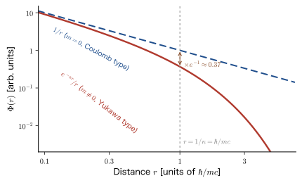

Chapter 61The Klein–Gordon Equation — The First Attempt at a Relativistic Wave Equation
Part XI Relativistic Quantum Mechanics This part is the last part of this book. The Schrödinger equation, which we have used in the 60 chapters so far, was an equation for particles moving much more slowly than the speed of light $c$. The energies of the valence electrons that determine the properties of materials are on the order of eV, which is only $10^{-5}$ times the rest energy of the electron, $m_{\mathrm e}c^2=511\ \mathrm{keV}$, so that was sufficient. In the following situations, however, the Schrödinger equation alone is no longer enough. (i) The electron beam of an electron microscope (accelerating voltage $200\ \mathrm{kV}$) travels at about 70% of the speed of light. (ii) In heavy elements such as gold, mercury, and lead, the speed of the inner electrons exceeds half the speed of light, and relativistic effects show up even in the color and melting point of the metal and in the voltage of a battery. (iii) The electron spin, the fact that the $g$ factor is 2, and the spin–orbit interaction were “things added on afterward” in the nonrelativistic theory, but they come out naturally from a relativistic equation. (iv) There exists a particle with the same mass as the electron and the opposite charge (the positron, an antiparticle). Part XI explains these one at a time and lays the groundwork for elementary particle physics (AD 09).
Let us first lay out the road map of this part.
- Chapter 61 (this chapter) Klein–Gordon Equation: The first relativistic wave equation, obtained by converting $E^2=p^2c^2+m^2c^4$ into operators just as it stands. It is Lorentz invariant, it reduces to the Schrödinger equation in the nonrelativistic limit, and for hydrogen-like atoms it gives the Bohr levels together with an estimate of the size of the relativistic correction, about $(Z\alpha)^2$ times those levels. However, the probability density becomes negative and the electron spin does not appear, so the substance of the fine structure (the order of 2s and 2p, the splitting by $j$) cannot be reproduced. Knowing why it fails is the motivation for the next chapter.
- Chapter 62 Dirac Equation: We take the square root using matrices and obtain an equation that is first order in time. Spin $1/2$ appears naturally.
- Chapter 63 Nonrelativistic Limit of the Dirac Equation: The Pauli equation, $g=2$, the fine structure of hydrogen, and relativistic effects in heavy elements. The spin–orbit interaction, which we derived heuristically in Part IV (Chapter 26), is derived exactly from the equation.
- Chapter 64 Hole Theory and Antiparticles: How to interpret negative-energy solutions, the prediction and discovery of the positron, and the Klein paradox.
- Chapter 65 Toward Quantum Field Theory and Elementary Particle Physics: A world in which the number of particles changes, particles that mediate forces, an introduction to QED, and Dirac electrons in solids.
Let us also check the connection with the previous part. In Part X (Chapter 56 through Chapter 60), we learned how to write phenomena in which the number of particles changes by using creation and annihilation operators. The difficulty with the Klein–Gordon equation that we will see in this chapter (the probability density becoming negative) is precisely a manifestation of the fact that “the wave function of a single particle alone cannot handle phenomena in which the number of particles changes,” and its true resolution is given in Chapter 65 using the tools of Part X. Also, the spin and the spin–orbit interaction introduced in Part IV (Chapter 23 through Chapter 26) were taken as starting points without asking “why does the electron have spin?”; the answer is obtained in Chapter 62 and Chapter 63.
As the first chapter of this part, this chapter derives the Klein–Gordon equation, the first attempt at a relativistic wave equation, in the same way as we constructed the Schrödinger equation, and checks “what works and what does not” with concrete numbers such as the wavelength of an electron beam, the speed of a 1s electron, and the levels of a hydrogen-like atom. In the end this equation cannot be used for the electron, but it is still used in elementary particle physics today as the equation for particles that have no spin (the π meson, the K meson, the Higgs boson, and so on). We also get used to natural units $\hbar=c=1$.
- Be able to check, by a calculation with phase factors, that the Schrödinger equation keeps its form under a Galilean transformation but not under a Lorentz transformation, and to judge numerically “at what point relativity becomes necessary” by using the yardstick for how much relativity matters, $v/c=Z\alpha$, together with the wavelength of an electron beam (the electron microscope)
- Be able to construct the Klein–Gordon equation $(\Box+m^2c^2/\hbar^2)\psi=0$ from $E^2=p^2c^2+m^2c^4$ and to derive, without skipping steps, that it reduces to the Schrödinger equation in the nonrelativistic limit, and to know that the static solution takes the Yukawa form $e^{-\kappa r}/r$
- Be able to find, from the plane-wave solutions, the dispersion relation $\hbar\omega=\pm\sqrt{\hbar^2c^2k^2+m^2c^4}$, the group velocity $v_{\mathrm g}=pc^2/E$, and the phase velocity $v_{\mathrm{ph}}=E/p$ ($v_{\mathrm g}v_{\mathrm{ph}}=c^2$), and to explain why the negative-energy branch appears
- Be able to derive the continuity equation $\partial_t\rho+\nabla\cdot\bm{j}=0$ and to explain why $\rho$ cannot be a probability density and what is saved by the Pauli–Weisskopf reinterpretation
- Be able to solve the equation in an electromagnetic field (minimal coupling) in a Coulomb field to obtain the levels $E_{nl}$ of hydrogen-like atoms, and, by comparing the $n=2$ levels of hydrogen with experiment, to say what fails to match when there is no spin
- Be able to use the conversions in natural units $\hbar=c=1$ ($\hbar c=197.327\ \mathrm{MeV\,fm}$) and the procedure for restoring SI units
Source notes: Yasuhide Mochizuki, “Physics Notes: Quantum Mechanics 3,” pp. 73–74. The original notes contain only the heading on the chapter title page, “Relativistic Quantum Mechanics” (p. 74 is blank), so this chapter has been supplemented with standard textbook material. Related simulator: Relativistic Quantum Mechanics simulator (in ① the Schrödinger, Klein–Gordon, and Dirac dispersion relations can be compared side by side). For explanations, see the explanation of Relativistic Quantum Mechanics (§1 Lorentz symmetry, §2 Klein–Gordon equation); for the limitation on determining the electron's position (Compton wavelength, pair production), see the explanation of Elementary Particles (§6.2).
61.1 Why Do We Need Relativistic Quantum Mechanics? — The Limits of the Schrödinger Equation and a Map of Part XI
61.1.1 What the Schrödinger equation assumed
The Schrödinger equation was constructed from the relation between the energy and momentum of a particle, $E=p^2/2m+V$, by making the replacements of the correspondence principle, $E\to i\hbar\,\partial/\partial t$ and $\bm{p}\to-i\hbar\nabla$ (Chapter 9, Section 9.1). The result is
\begin{equation} i\hbar\,\frac{\partial\Psi}{\partial t}=-\frac{\hbar^2}{2m}\nabla^2\Psi+V\Psi \label{eq:61-tdse} \end{equation}This equation clearly contains two assumptions of classical physics. First, the kinetic energy was written as the Newtonian $p^2/2m$. This is an approximation valid when the speed $v$ of the particle is much smaller than the speed of light $c$; in special relativity the kinetic energy is $T=\sqrt{p^2c^2+m^2c^4}-mc^2$, which approaches $p^2/2m$ only when $p\ll mc$ (AD 03, Chapter 57, Section 57.6 (in Japanese)). Second, the equation contains only derivatives that are first order in time and second order in space. In relativity, time and space are mixed by the Lorentz transformation and ought to be treated on an equal footing, so this asymmetry seems unlikely to be compatible with relativity. Below, we check this “incompatibility” concretely.
61.1.2 The form is preserved under the Galilean transformation but not under the Lorentz transformation
Suppose that the coordinate system S′ moves at a constant speed $v$ in the $x$ direction relative to the coordinate system S. The Galilean transformation is $x'=x-vt$, $t'=t$ (AD 03, Chapter 54, Section 54.1 (in Japanese)). Consider the one-dimensional Schrödinger equation of a free particle ($V=0$). Suppose that an observer in S′ describes the wave function $\Psi'(x',t')$ as satisfying
\begin{equation} i\hbar\,\frac{\partial\Psi'}{\partial t'}=-\frac{\hbar^2}{2m}\frac{\partial^2\Psi'}{\partial x'^2} \label{eq:61-free-S'} \end{equation}With what wave function does an observer in S describe the same state, and does that wave function satisfy an equation of the same form in S as well?
Theorem 61.1: Galilean invariance of the Schrödinger equation
When $\Psi'(x',t')$ satisfies Eq. \eqref{eq:61-free-S'}, the function
\begin{equation} \Psi(x,t)=\exp\!\left[\frac{i}{\hbar}\left(mvx-\frac{1}{2}mv^2t\right)\right]\Psi'(x-vt,\,t) \label{eq:61-galilei} \end{equation}satisfies the equation in S, $i\hbar\,\partial_t\Psi=-(\hbar^2/2m)\,\partial_x^2\Psi$. Without the phase factor, it does not.
Derivation
Let the phase be $\theta=(mvx-\tfrac12mv^2t)/\hbar$, and differentiate $\Psi=e^{i\theta}\,\Psi'(x',t)$, with $x'=x-vt$, with respect to the variables $(x,t)$ of S. Since $\Psi'$ is a function of $x'$ and $t$, and $x'$ depends on $x$ and $t$, the chain rule (differentiation of a composite function) gives the partial derivative of $\Psi'$ with respect to $x$ as $\partial_{x'}\Psi'$ and that with respect to $t$ as $\partial_t\Psi'-v\,\partial_{x'}\Psi'$ (here $\partial_t\Psi'$ is the partial derivative with $x'$ held fixed). Also, $\partial_x\theta=mv/\hbar$ and $\partial_t\theta=-mv^2/(2\hbar)$.
Time derivative:
$$ \frac{\partial\Psi}{\partial t}=e^{i\theta}\left[-\frac{imv^2}{2\hbar}\Psi'+\partial_t\Psi'-v\,\partial_{x'}\Psi'\right] $$Multiplying both sides by $i\hbar$ gives
$$ i\hbar\frac{\partial\Psi}{\partial t}=e^{i\theta}\left[\frac{mv^2}{2}\Psi'+i\hbar\,\partial_t\Psi'-i\hbar v\,\partial_{x'}\Psi'\right]. $$Spatial derivative: differentiating $\partial_x\Psi=e^{i\theta}\left[\dfrac{imv}{\hbar}\Psi'+\partial_{x'}\Psi'\right]$ once more gives
$$ \frac{\partial^2\Psi}{\partial x^2}=e^{i\theta}\left[-\frac{m^2v^2}{\hbar^2}\Psi'+\frac{2imv}{\hbar}\partial_{x'}\Psi'+\partial_{x'}^2\Psi'\right] $$so that
$$ -\frac{\hbar^2}{2m}\frac{\partial^2\Psi}{\partial x^2}=e^{i\theta}\left[\frac{mv^2}{2}\Psi'-i\hbar v\,\partial_{x'}\Psi'-\frac{\hbar^2}{2m}\partial_{x'}^2\Psi'\right]. $$Taking the difference of these two equations, the $\dfrac{mv^2}{2}\Psi'$ term and the $-i\hbar v\,\partial_{x'}\Psi'$ term both cancel out, and
$$ i\hbar\frac{\partial\Psi}{\partial t}+\frac{\hbar^2}{2m}\frac{\partial^2\Psi}{\partial x^2}=e^{i\theta}\left[i\hbar\,\partial_t\Psi'+\frac{\hbar^2}{2m}\partial_{x'}^2\Psi'\right] $$remains. The bracket on the right-hand side is $0$ by Eq. \eqref{eq:61-free-S'}. Hence the left-hand side is also $0$, and $\Psi$ satisfies the free-particle equation in S. If the phase factor were not attached, the term $-i\hbar v\,\partial_{x'}\Psi'$ would remain, and the equality would not hold.
∎
Intuition: The phase factor is itself the “transformation of energy and momentum”
Let us check the meaning of the phase factor with a plane wave. Applying Eq. \eqref{eq:61-galilei} to the plane wave in S′, $\Psi'=e^{i(k'x'-\omega't')}$ ($\hbar\omega'=\hbar^2k'^2/2m$), and using $x'=x-vt$, we obtain
$$ \Psi=\exp\!\left[i\left(\Bigl(k'+\frac{mv}{\hbar}\Bigr)x-\Bigl(\omega'+k'v+\frac{mv^2}{2\hbar}\Bigr)t\right)\right] $$The wavenumber in S is $k=k'+mv/\hbar$, and the angular frequency is $\omega=\omega'+k'v+mv^2/(2\hbar)$. Multiplying by $\hbar$, the momentum is $p=p'+mv$ and the energy is $E=E'+p'v+\tfrac12mv^2$, which is exactly the Galilean transformation of Newtonian mechanics (when $p=p'+mv$, $p^2/2m=p'^2/2m+p'v+mv^2/2$). The phase factor corresponds to the “correction” that carries out this transformation on the wave function, and the relation $\hbar\omega=\hbar^2k^2/2m$ is preserved in S as well. The probability density $\abs{\Psi}^2=\abs{\Psi'(x-vt,t)}^2$ is unaffected by the phase factor, and the distribution appears simply to move at speed $v$. On the other hand, the de Broglie wavelength $2\pi\hbar/p$ depends on the observer (Exercise 61.2).
Next, we apply the Lorentz transformation $x'=\gamma_{\mathrm L}(x-vt)$, $t'=\gamma_{\mathrm L}(t-vx/c^2)$, $\gamma_{\mathrm L}=1/\sqrt{1-v^2/c^2}$ to the same equation (AD 03, Chapter 54, Section 54.5 (in Japanese). In this book the Lorentz factor is denoted $\gamma_{\mathrm L}$; see Section 61.1.6). By the chain rule,
\begin{equation} \frac{\partial}{\partial x}=\gamma_{\mathrm L}\left(\frac{\partial}{\partial x'}-\frac{v}{c^2}\frac{\partial}{\partial t'}\right),\qquad \frac{\partial}{\partial t}=\gamma_{\mathrm L}\left(\frac{\partial}{\partial t'}-v\frac{\partial}{\partial x'}\right) \label{eq:61-lorentz-d} \end{equation}Therefore
$$ \frac{\partial^2}{\partial x^2}=\gamma_{\mathrm L}^2\left[\frac{\partial^2}{\partial x'^2}-\frac{2v}{c^2}\frac{\partial^2}{\partial x'\,\partial t'}+\frac{v^2}{c^4}\frac{\partial^2}{\partial t'^2}\right] $$and the right-hand side of the equation written in S′ contains a $\partial_{x'}\partial_{t'}$ term that was not in the original equation, and a second derivative with respect to time, the $\partial_{t'}^2$ term. Even if we multiply by the phase factor $e^{i\theta}$, only terms with derivatives of first order or lower (terms in which $\Psi'$ is multiplied by a coefficient) appear, and the $\partial_{t'}^2$ term cannot be removed. That is, the Schrödinger equation does not keep its form under the Lorentz transformation. This can also be confirmed with plane waves. The phase of a plane wave $e^{i(kx-\omega t)}$ is a value independent of the observer (a scalar), so $(\omega/c,\,k)$ is a two-component quantity that undergoes the same Lorentz transformation as $(ct,\,x)$, and between its components the relation holds that $\omega^2/c^2-k^2$ is kept invariant. If the Schrödinger equation kept its form, both the plane wave $(\omega,k)$ in S and the plane wave $(\omega',k')$ in S′ would have to lie on the parabola $\omega=\hbar k^2/2m$. On the parabola, however, $\omega^2/c^2-k^2=\hbar^2k^4/(4m^2c^2)-k^2$ varies with $k$, and it takes equal values for $k$ and $k'$ only when $k'=\pm k$. Hence the equation is incompatible with a Lorentz transformation with $v\ne0$. The form is preserved only in the limit $c\to\infty$ ($\gamma_{\mathrm L}\to1$, $v/c^2\to0$), where the Lorentz transformation coincides with the Galilean transformation (AD 03, Chapter 54, Section 54.6 (in Japanese)).
Caution: “Wrong” means that “the form changes”
The principle of relativity requires that the form of the laws of physics be the same in all inertial frames. It has been confirmed by experiment that nature is symmetric under the Lorentz transformation (the Michelson–Morley experiment, etc.; AD 03, Chapter 54, Section 54.3 (in Japanese)). Therefore, the Schrödinger equation, whose form changes under the Lorentz transformation, is an approximate equation that holds for $v\ll c$, not an exact one. In the next section we will see numerically how good the approximation is.
61.1.3 A yardstick for the effect of relativity — the speed $v/c=Z\alpha$ of a 1s electron
Whether relativity matters is determined by what fraction of the speed of light the speed of the particle amounts to. Let us estimate the speed of an electron in an atom. The energy of the 1s state of a hydrogen-like atom of atomic number $Z$ is $E_{1\mathrm{s}}=-Z^2\times13.606\ \mathrm{eV}$, which can be written as $-\tfrac12Z^2\alpha^2m_{\mathrm e}c^2$. Here
\begin{equation} \alpha=\frac{e_0^2}{4\pi\varepsilon_0\hbar c}=\frac{1}{137.036} \label{eq:61-alpha} \end{equation}is the fine-structure constant, a dimensionless number that expresses the strength of the electromagnetic interaction between the electron and the atomic nucleus. (An $\alpha$ without a subscript denotes this constant in this book. It is distinct from the Dirac matrices $\alpha_i$ and from the spin function $\alpha$. We sort this out in the box in Section 61.1.6.)
For a bound state in a Coulomb potential, the virial theorem (Chapter 17, Section 17.4) gives the mean value of the kinetic energy as $\expval{T}=-E_{1\mathrm{s}}=\tfrac12Z^2\alpha^2m_{\mathrm e}c^2$. Setting this equal to $\tfrac12m_{\mathrm e}\expval{v^2}$ gives $\expval{v^2}=Z^2\alpha^2c^2$, that is, the speed of a 1s electron (root-mean-square) is
The larger the $Z$ of an atom, the closer to the speed of light its inner electrons move. Table 61.1 shows the values for representative elements. $\gamma_{\mathrm L}=1/\sqrt{1-(Z\alpha)^2}$ is the Lorentz factor, which indicates by what factor the mass appears larger than the rest mass.
| Element | $Z$ | $Z\alpha=v/c$ | $\gamma_{\mathrm L}=1/\sqrt{1-(Z\alpha)^2}$ |
|---|---|---|---|
| H | 1 | $0.0073$ | $1.00003$ |
| C | 6 | $0.044$ | $1.001$ |
| Fe | 26 | $0.190$ | $1.018$ |
| Ag | 47 | $0.343$ | $1.065$ |
| Au | 79 | $0.576$ | $1.224$ |
| Hg | 80 | $0.584$ | $1.232$ |
| Pb | 82 | $0.598$ | $1.248$ |
| U | 92 | $0.671$ | $1.349$ |
Example 61.1: Speed and mass increase of 1s electrons
Using Eq. \eqref{eq:61-vc}, find $v/c$ and $\gamma_{\mathrm L}$ for the 1s electrons of Fe, Au, and U. By what percentage does the mass of a 1s electron in Au appear to increase over the rest mass? Also, how reliable is this estimate?
Solution. Use $\alpha=1/137.036=7.2974\times10^{-3}$.
Fe ($Z=26$): $Z\alpha=26\times7.2974\times10^{-3}=0.1897$. From $(Z\alpha)^2=0.03600$, $\gamma_{\mathrm L}=1/\sqrt{1-0.03600}=1/\sqrt{0.96400}=1/0.98184=1.0185$.
Au ($Z=79$): $Z\alpha=79\times7.2974\times10^{-3}=0.5765$. From $(Z\alpha)^2=0.3323$, $\gamma_{\mathrm L}=1/\sqrt{1-0.3323}=1/\sqrt{0.6677}=1/0.8171=1.224$.
U ($Z=92$): $Z\alpha=92\times7.2974\times10^{-3}=0.6714$. From $(Z\alpha)^2=0.4507$, $\gamma_{\mathrm L}=1/\sqrt{1-0.4507}=1/\sqrt{0.5493}=1/0.7411=1.349$.
The 1s electron of Au moves at about 58% of the speed of light, and its mass appears to increase by $\gamma_{\mathrm L}-1=0.224$, that is, by about 22%. If the mass increases, the orbital is pulled inward (the size of the orbital is inversely proportional to the mass), and the energy also deviates greatly from the nonrelativistic value. Note, however, that this estimate is a rough one: it “applies the formula for $\gamma_{\mathrm L}$ to the $\expval{v^2}$ obtained from the nonrelativistic wave function.” As $Z\alpha$ becomes large, the result differs in detail from one that incorporates relativity correctly. The accurate treatment is given in Chapter 63. Even so, the outlook is unchanged: “up to Fe the correction is 2% or less, whereas for Au, Hg, Pb, and U a correction of 20% or more is certainly needed.”
Application: Properties of heavy elements and relativity
When the speed of inner-shell electrons is close to the speed of light, not only the inner shells but the s orbitals as a whole contract, and as a result the d and f orbitals, conversely, are shielded more strongly and expand. Chapter 63 shows that this effect explains the color of gold (why gold looks yellow), the fact that mercury is a liquid at room temperature, a large part of the voltage of the lead-acid battery, and so on. On the other hand, for the valence electrons of light elements (C, N, O, Si, etc.), the ratio of the kinetic energy (about $10\ \mathrm{eV}$) to the rest energy $511\ \mathrm{keV}$ is of the order of $10^{-5}$, and the speed is $v/c\approx Z_{\mathrm{eff}}\alpha/n\lesssim0.01$ (about $0.01$ for a 2p electron of C if we take $Z_{\mathrm{eff}}\approx3$). The relative size of the mass-velocity correction stays at $(v/c)^2\approx10^{-5}\sim10^{-4}$, and the Schrödinger equation is sufficient for discussions of bond energies and lattice constants. For electrons with a confinement energy of the order of $\mathrm{meV}$, as in quantum dots, the correction is smaller still, of the order of $10^{-8}$ (Example 61.6). In precise calculations for systems containing heavy elements, relativistic effects are incorporated through approximations such as relativistic effective core potentials (ECPs) and ZORA. An advanced treatment of the Dirac equation and spinors is found in Chapter 7, Section 7.10 of AD 05. Incidentally, the fact that a large part of the voltage of the lead-acid battery is explained by relativistic effects was shown by Ahuja et al. in first-principles calculations (see the references at the end of the book).
61.1.4 Wavelength of an electron beam — relativity is needed at high accelerating voltages
As another concrete example, consider the electron beam of an electron microscope. When an electron is accelerated through a voltage $U$, its kinetic energy is $T=e_0U$. In the momentum $p$ that enters the de Broglie relation $\lambda=h/p$, we wrote $p=\sqrt{2m_{\mathrm e}T}$ in the nonrelativistic case (Chapter 6, Section 6.3), but in relativity the total energy $E=T+m_{\mathrm e}c^2$ and the momentum are related by $E^2=(pc)^2+(m_{\mathrm e}c^2)^2$ (AD 03, Chapter 57, Section 57.5 (in Japanese)). From this, $(pc)^2=(T+m_{\mathrm e}c^2)^2-(m_{\mathrm e}c^2)^2$, that is,
\begin{equation} (pc)^2=T\,(T+2m_{\mathrm e}c^2),\qquad \lambda=\frac{h}{p}=\frac{hc}{\sqrt{T\,(T+2m_{\mathrm e}c^2)}}=\frac{h}{\sqrt{2m_{\mathrm e}T\left(1+\dfrac{T}{2m_{\mathrm e}c^2}\right)}} \label{eq:61-lam} \end{equation}If $T\ll2m_{\mathrm e}c^2$, the quantity in the parentheses is close to 1, and we return to the nonrelativistic formula $\lambda_{\mathrm{nr}}=h/\sqrt{2m_{\mathrm e}T}$. In other words, the magnitude of the correction is determined by $T/(2m_{\mathrm e}c^2)$. For the numerical value of the nonrelativistic wavelength, we put $T=e_0U$ into $\lambda_{\mathrm{nr}}=h/\sqrt{2m_{\mathrm e}T}$ and substitute the values of $h$, $m_{\mathrm e}$, and $e_0$, which gives $\lambda_{\mathrm{nr}}=h/\sqrt{2m_{\mathrm e}e_0U}=1.2264\ \mathrm{nm}/\sqrt{U/(1\ \mathrm{V})}$. The speed is $\beta=v/c=pc/E$ and the Lorentz factor is $\gamma_{\mathrm L}=1+T/(m_{\mathrm e}c^2)$; since $p=\gamma_{\mathrm L}\beta m_{\mathrm e}c$, we can also write $\lambda=h/(\gamma_{\mathrm L}\beta m_{\mathrm e}c)$.
Example 61.2: Wavelength of the electron beam in scanning and transmission electron microscopes
For electrons with accelerating voltages of $10\ \mathrm{kV}$ (scanning electron microscope, SEM), $100\ \mathrm{kV}$, $200\ \mathrm{kV}$, and $300\ \mathrm{kV}$ (transmission electron microscope, TEM), find $\gamma_{\mathrm L}$, $\beta$, the nonrelativistic wavelength $\lambda_{\mathrm{nr}}$, and the wavelength $\lambda$ from Eq. \eqref{eq:61-lam}, and examine the deviation of the nonrelativistic formula.
Solution. We calculate the $200\ \mathrm{kV}$ case in detail. $m_{\mathrm e}c^2=510.999\ \mathrm{keV}$ and $T=200\ \mathrm{keV}$. $\gamma_{\mathrm L}=1+200/510.999=1.3914$ and $\beta=\sqrt{1-1/\gamma_{\mathrm L}^2}=\sqrt{1-0.5165}=0.6953$. The nonrelativistic wavelength is $\lambda_{\mathrm{nr}}=1.2264\ \mathrm{nm}/\sqrt{200\,000}=1.2264/447.21\ \mathrm{nm}=2.742\ \mathrm{pm}$. From $T/(2m_{\mathrm e}c^2)=200/1022.0=0.1957$, the correction factor is $\sqrt{1.1957}=1.0935$, and we obtain $\lambda=\lambda_{\mathrm{nr}}/1.0935=2.508\ \mathrm{pm}$. With the alternative formula $\lambda=h/(\gamma_{\mathrm L}\beta m_{\mathrm e}c)$ as well, dividing $h/(m_{\mathrm e}c)=2.4263\ \mathrm{pm}$ (the Compton wavelength) by $\gamma_{\mathrm L}\beta=1.3914\times0.6953=0.9675$ gives $2.508\ \mathrm{pm}$, in agreement. The nonrelativistic formula gives $(2.742-2.508)/2.508=0.093$, that is, a value about 9% too long. Note that the error $T/(2m_{\mathrm e}c^2)=0.196$ (about 20%) in Figure 61.1 (right) is the error of the kinetic-energy formula $p^2/2m_{\mathrm e}$. The wavelength goes as $\lambda\propto1/p$, and the correction factor applies in the form of a square root, $\sqrt{1.196}=1.094$, so the error in the wavelength is about 9%, roughly half as large (Section 61.3.3).
The results of similar calculations for the other voltages are summarized in Table 61.2.
| Accelerating voltage | $\gamma_{\mathrm L}$ | $\beta=v/c$ | $\lambda_{\mathrm{nr}}$ | $\lambda$ | $(\lambda_{\mathrm{nr}}-\lambda)/\lambda$ |
|---|---|---|---|---|---|
| $10\ \mathrm{kV}$ | $1.0196$ | $0.1950$ | $12.264\ \mathrm{pm}$ | $12.205\ \mathrm{pm}$ | $0.49\ \%$ |
| $100\ \mathrm{kV}$ | $1.1957$ | $0.5482$ | $3.878\ \mathrm{pm}$ | $3.701\ \mathrm{pm}$ | $4.8\ \%$ |
| $200\ \mathrm{kV}$ | $1.3914$ | $0.6953$ | $2.742\ \mathrm{pm}$ | $2.508\ \mathrm{pm}$ | $9.3\ \%$ |
| $300\ \mathrm{kV}$ | $1.5871$ | $0.7765$ | $2.239\ \mathrm{pm}$ | $1.969\ \mathrm{pm}$ | $13.7\ \%$ |
Even for electrons in a $10\ \mathrm{kV}$ SEM, the speed is already about 20% of the speed of light, and the nonrelativistic wavelength is off by 0.5% (the error of the kinetic-energy formula $p^2/2m$ is about 1%, Figure 61.1, right). In a TEM at $200\ \mathrm{kV}$ the electrons travel at about 70% of the speed of light, and the wavelength without the relativistic correction is wrong by as much as about 9%. In the analysis of electron diffraction and in simulations of high-resolution images, this correction is indispensable. The relation between the speed $\beta$ and the nonrelativistic error, as functions of the kinetic energy $T$, is shown in Figure 61.1.
![Graphs with the kinetic energy T of the electron on the horizontal axis (logarithmic). The left panel shows the speed β = v/c: the relativistic value (red solid line) never exceeds 1, but the nonrelativistic value (blue dashed line) exceeds 1 at T of about 255 keV (= m_e c²/2). β = 0.195 at 10 kV for the scanning electron microscope, and β = 0.695 at 200 kV and β = 0.777 at 300 kV for the transmission electron microscope. The right panel shows the relative error T/(2mc²) of the nonrelativistic kinetic-energy formula p²/2m, which grows in proportion to T: about 1% at 10 kV and about 20% at 200 kV](figs/ch61_fig61-1.svg)
61.1.5 Three routes to a relativistic equation — a map of Part XI
To construct a wave equation from the relation $E^2=p^2c^2+m^2c^4$ in the same way as the Schrödinger equation was constructed, there are the following three ideas.
- Convert the squared relation into operators as it stands: Substitute $E\to i\hbar\partial_t$ and $\bm{p}\to-i\hbar\nabla$ directly into $E^2=p^2c^2+m^2c^4$. The result is the Klein–Gordon equation, which is treated in this chapter. It is an equation of second order in time and corresponds to a spin-$0$ particle.
- Take the square root with matrices: The square root in $E=\sqrt{p^2c^2+m^2c^4}$ is taken with the help of the matrices $\bm\alpha$ and $\beta$, so that $E=c\bm\alpha\cdot\bm{p}+\beta mc^2$ is a linear expression in $\bm{p}$. This gives the Dirac equation, which is first order in time, and spin $1/2$ enters automatically (Chapters 62 and 63).
- Reinterpret it as a world in which the particle number changes: If either equation is read as an equation for the wave function of a single particle, solutions with negative energy appear. This is a manifestation of the fact that in relativity particles are created and annihilated (if the energy is at least $2mc^2$, a particle–antiparticle pair can be produced), and the theory must be written not with wave functions but with field operators (Chapters 64 and 65). The idea of creation and annihilation operators from Part X comes into its own here.
Figure 61.2 shows a map of the whole of Part XI.
61.1.6 Notation conventions of Part XI
Notation conventions of Part XI
- Keep $\hbar$ and $c$. As a rule, we write $\hbar$ and $c$ explicitly in the equations. As for the switch to natural units $\hbar=c=1$, Section 61.6 gives a conversion table, and the switch itself is carried out in Chapter 65.
- Metric and four-vectors: the metric is $(+,-,-,-)$, $x^\mu=(ct,\bm{x})=(ct,x,y,z)$, and $\partial_\mu=\dfrac{\partial}{\partial x^\mu}=\left(\dfrac{1}{c}\dfrac{\partial}{\partial t},\,\nabla\right)$ (the same as in AD 03, Part VIII). The d'Alembertian is $$\Box\equiv\partial_\mu\partial^\mu=\frac{1}{c^2}\frac{\partial^2}{\partial t^2}-\nabla^2$$ Some other books define it with the opposite sign, $\Box=\nabla^2-\dfrac1{c^2}\partial_t^2$, so take care when comparing.
- Elementary charge and electric charge: the elementary charge is $e_0=1.602\,176\,634\times10^{-19}\ \mathrm{C}$ (the same quantity as $e$ in AD 03; we reserve $e$ for Napier's number). The charge of the electron is $q=-e_0$. The electric potential is $\varphi_{\mathrm{el}}$ (the same quantity as $\varphi$ in AD 03; it is distinguished from the azimuthal angle $\varphi$), and the electrostatic potential energy is $V=q\varphi_{\mathrm{el}}$.
- Distinguish the three meanings of $\alpha$: (i) The unsubscripted $\alpha=e_0^2/(4\pi\varepsilon_0\hbar c)\approx1/137$ is the fine-structure constant. (ii) The subscripted $\alpha_i$ ($i=x,y,z$ or $1,2,3$), or the vector $\bm\alpha$, denotes the Dirac matrices (Chapter 62). (iii) From Part IV onward, $\alpha,\beta$ are the spin functions representing $\ket{\uparrow},\ket{\downarrow}$. The $\beta$ of the Dirac matrices and the resonance integral $\beta$ (Chapter 40) are also unrelated to each other. In this chapter, we also write the speed ratio $v/c$ as $\beta$ (Sections 61.1.4 and 61.3). In the radial equation of Section 61.5, we use a different symbol, $\eta$, to avoid confusion. The spin states of Part XI are written $\uparrow$, $\downarrow$ or $\chi_\uparrow$, $\chi_\downarrow$.
- Lorentz factor: we write $\gamma_{\mathrm L}=1/\sqrt{1-v^2/c^2}=E/(m_{\mathrm e}c^2)$ (the same quantity as $\gamma$ from AD 03, Chapter 54 onward). This is to distinguish it from the Dirac $\gamma^\mu$ matrices (Chapter 62) and from $\gamma=\sqrt{1-(Z\alpha)^2}$, which appears in Chapter 63 as the exponent of the radial function of the 1s state of the Dirac equation. The latter is a different quantity from the Lorentz factor; if the speed of a 1s electron is estimated by the Bohr-model value $v=Z\alpha c$, the two are related by $\gamma=1/\gamma_{\mathrm L}$ (take care when comparing Table 61.1 and Table 63.5). Note also that the photon is written $\gamma$ (Chapter 64).
- Symbols with several meanings: $\kappa$ is the decay constant in Chapter 61 ($mc/\hbar$ in Section 61.2.2; $\kappa_b$ in the radial equation for bound states), and the angular-momentum quantum number of the Dirac equation in Chapter 63. $\eta$ is the parameter expressing the strength of the Coulomb coupling in Section 61.5, the rapidity in Chapter 62, a coefficient of the Dirac radial equation in Chapter 63, and the operator $\eta_0$ in Chapter 64. $T$ is the kinetic energy in Chapter 61 and the transmission coefficient in Chapter 64. Which meaning is intended is stated immediately before the definition in the chapter concerned.
- Voltage, volume, and potential: the accelerating voltage is denoted $U$ and the volume of the box $L^3$; $V$ is used only for the potential energy ($V=q\varphi_{\mathrm{el}}$).
- Wave function: the wave function of the Klein–Gordon equation is written $\psi(\bm{r},t)$ or $\psi(x)$ ($x=x^\mu$) (a scalar). It is distinguished from the wave function $\Psi(\bm{r},t)$ of the Schrödinger equation.
61.2 Constructing the Klein–Gordon Equation — Converting $E^2=p^2c^2+m^2c^4$ into Operators
61.2.1 Replacing the relation with operators
We constructed the Schrödinger equation by applying both sides of the relation $E=p^2/2m+V$ to the wave function and making the replacements $E\to i\hbar\partial_t$, $\bm{p}\to-i\hbar\nabla$. Let us carry out the same procedure for the relativistic relation
\begin{equation} E^2=p^2c^2+m^2c^4 \label{eq:61-disp-class} \end{equation}(here $m$ is the mass of the particle and $p=\abs{\bm{p}}$). Since $E^2$ means “applying $E$ twice” and $p^2=\bm{p}\cdot\bm{p}$ means “applying $\bm{p}$ twice and taking the inner product,” we have $E^2\to(i\hbar\partial_t)^2=-\hbar^2\partial_t^2$ and $p^2\to(-i\hbar\nabla)\cdot(-i\hbar\nabla)=-\hbar^2\nabla^2$, and we obtain
\begin{equation} -\hbar^2\frac{\partial^2\psi}{\partial t^2}=-\hbar^2c^2\nabla^2\psi+m^2c^4\psi \label{eq:61-kg-raw} \end{equation}Dividing both sides by $\hbar^2c^2$ and moving terms to one side gives
\begin{equation} \frac{1}{c^2}\frac{\partial^2\psi}{\partial t^2}-\nabla^2\psi+\frac{m^2c^2}{\hbar^2}\,\psi=0 \label{eq:61-kg-explicit} \end{equation}The terms all have the same dimension, $[\psi]/\mathrm{m}^2$ ($m^2c^2/\hbar^2=(m c/\hbar)^2$ is $(\mathrm{kg\cdot m/s}\,/\,\mathrm{J\,s})^2=\mathrm{m}^{-2}$).
The same equation becomes more concise when written in the four-vector formalism of relativity. The four-momentum is $p^\mu=(E/c,\bm{p})$, and the relation in Eq. \eqref{eq:61-disp-class} is equivalent to $p_\mu p^\mu=m^2c^2$ (AD 03, Chapter 57, Section 57.5 (in Japanese)). The replacement rule, written in components, is $E/c\to i\hbar\,\dfrac1c\partial_t$, $\bm{p}\to-i\hbar\nabla$. Since $\partial^\mu=\left(\dfrac1c\partial_t,\,-\nabla\right)$, this can be written in a single line as $p^\mu\to i\hbar\,\partial^\mu$. Then $p_\mu p^\mu=m^2c^2$ becomes $-\hbar^2\partial_\mu\partial^\mu\psi=m^2c^2\psi$, that is, $-\hbar^2\Box\psi=m^2c^2\psi$.
Law 61.1: The Klein–Gordon equation
The wave function $\psi(x)$ of a free particle of mass $m$ with no spin satisfies
\begin{equation} \left(\Box+\frac{m^2c^2}{\hbar^2}\right)\psi=0,\qquad \Box=\frac{1}{c^2}\frac{\partial^2}{\partial t^2}-\nabla^2 \label{eq:61-kg} \end{equation}This is called the Klein–Gordon equation.
This equation was proposed independently by Klein, Gordon, Fock, and others in 1926, immediately after Schrödinger's papers. (It is said that Schrödinger himself also considered this form before constructing the nonrelativistic equation, but abandoned it for the time being because it did not agree with the fine structure of the hydrogen atom. The reason becomes clear in Section 61.5.)
Why keep it squared?
If we replace the square root in $E=\sqrt{p^2c^2+m^2c^4}$ by an operator, $\sqrt{m^2c^4+c^2\hat{\bm{p}}^2}=mc^2\sqrt{1+\hat{\bm{p}}^2/(mc)^2}$ becomes an operator containing derivatives of infinite order, obtained by expanding it in a power series in $\hat{\bm{p}}^2=-\hbar^2\nabla^2$. The result would be a nonlocal equation in which the change with time of the wave function at a point is related to the values of the wave function at all the points around it (including values far away), and this also conflicts with the postulate that time and space be treated on an equal footing. The Klein–Gordon equation avoids this difficulty by making the replacement on the square, without taking the square root. Dirac, on the other hand, found a different way: taking the square root exactly, as “a linear expression with matrix coefficients” (Chapter 62).
This equation is Lorentz invariant. Since $\Box=\partial_\mu\partial^\mu$ is the inner product of four-vectors, it is a scalar operator, and its form does not change under a Lorentz transformation (AD 03, Chapter 58, Section 58.2 (in Japanese)). Therefore, if the wave function $\psi$ is a scalar function (its value does not change when the coordinate system is changed: $\psi'(x')=\psi(x)$), Eq. \eqref{eq:61-kg} takes the same form in every inertial frame. Being a scalar means carrying no information about orientation, that is, describing a particle of spin $0$. For an electrically neutral particle ($\pi^0$), a real-valued $\psi$ can also be used, but for charged particles ($\pi^\pm$) it takes complex values.
61.2.2 The reduced Compton wavelength — the length that appears in the equation
The quantity $mc/\hbar$ that appears in the mass term of Eq. \eqref{eq:61-kg} has the dimension of a reciprocal length. We therefore define
\begin{equation} \bar{\lambda}_{\mathrm C}\equiv\frac{\hbar}{mc},\qquad\kappa\equiv\frac{1}{\bar{\lambda}_{\mathrm C}}=\frac{mc}{\hbar} \label{eq:61-compton} \end{equation}Here $\bar{\lambda}_{\mathrm C}$ is the reduced Compton wavelength, which is the Compton wavelength $\lambda_{\mathrm C}=h/(mc)$ that appeared in Compton scattering (Chapter 6, Section 6.1) divided by $2\pi$. For the electron, $\bar{\lambda}_{\mathrm C}=3.8616\times10^{-13}\ \mathrm{m}=386.16\ \mathrm{fm}$ ($\lambda_{\mathrm C}=2.4263\ \mathrm{pm}$). Using this, the equation can be written $(\Box+\kappa^2)\psi=0$.
In the limit $m\to0$ ($\kappa\to0$), we return to $\Box\psi=0$, that is, the wave equation $\dfrac{1}{c^2}\partial_t^2\psi=\nabla^2\psi$. This is the equation satisfied by light (electromagnetic waves; AD 03, Chapter 42, Section 42.3 (in Japanese), and AD 02, Chapter 43, Section 43.1), and it describes a wave propagating at speed $c$. The mass $m$ can be viewed as adding to this wave equation a “restoring force” term, $\kappa^2\psi$.
Example 61.3: The Compton wavelength and the confinement energy
(a) Find the reduced Compton wavelength of the electron. (b) When an electron is confined in a region of size $L$, the magnitude of its momentum is roughly $p\sim\hbar/L$ (the uncertainty principle). Find the value of $L$ for which $pc$ is of the same order as $m_{\mathrm e}c^2$, and state its meaning. (c) For a semiconductor quantum dot of width $L=5\ \mathrm{nm}$ (approximated by an infinite well of width $L$), find $\hbar c/L$ and the ground-state energy $E_1$, and judge whether relativity is needed.
Solution. (a) Using $\hbar c=197.327\ \mathrm{MeV\,fm}$ and $m_{\mathrm e}c^2=0.510999\ \mathrm{MeV}$, we obtain $\bar{\lambda}_{\mathrm C}=\hbar c/(m_{\mathrm e}c^2)=197.327/0.510999\ \mathrm{fm}=386.16\ \mathrm{fm}$.
(b) From $pc\sim\hbar c/L=m_{\mathrm e}c^2$ we get $L\sim\hbar c/(m_{\mathrm e}c^2)=\bar{\lambda}_{\mathrm C}=386\ \mathrm{fm}$. This is at most one hundredth of the size of an atom ($0.5\ \text{Å}=5\times10^4\ \mathrm{fm}$). If an electron is confined in so small a region, its kinetic energy becomes equal to or greater than its rest energy, and reaches the energy $2m_{\mathrm e}c^2$ needed to create a particle–antiparticle pair. In other words, $\bar{\lambda}_{\mathrm C}$ is the length scale at which the picture of “a single particle” ceases to hold.
(c) From $\hbar c=197.327\ \mathrm{eV\,nm}$ we get $\hbar c/L=197.327/5\ \mathrm{eV}=39.5\ \mathrm{eV}$. This is only $7.7\times10^{-5}$ times $m_{\mathrm e}c^2=511\ \mathrm{keV}$. The ground-state energy of the infinite well is $E_1=\pi^2\hbar^2/(2m_{\mathrm e}L^2)$ (Chapter 10, Section 10.1), and writing this with $\hbar c$ gives $E_1=\dfrac{\pi^2}{2}\dfrac{(\hbar c)^2}{m_{\mathrm e}c^2\,L^2}=4.9348\times\dfrac{(197.327\ \mathrm{eV\,nm})^2}{(5.10999\times10^5\ \mathrm{eV})(5\ \mathrm{nm})^2}=1.504\times10^{-2}\ \mathrm{eV}=15.0\ \mathrm{meV}$. With $E_1/(m_{\mathrm e}c^2)=2.9\times10^{-8}$, the relativistic correction is negligible. Hence the quantum dot may be treated by the Schrödinger equation (Example 61.6 estimates the size of the correction).
61.2.3 The nonrelativistic limit — the Schrödinger equation returns
The Klein–Gordon equation should become the Schrödinger equation in the limit of slow particles. Let us check this. The total energy of the particle is the sum of the rest energy $mc^2$ and the remaining part $\varepsilon$ (the nonrelativistic energy), $E=mc^2+\varepsilon$. The time dependence $e^{-iEt/\hbar}$ of the wave function of a stationary state can be split into $e^{-imc^2t/\hbar}\,e^{-i\varepsilon t/\hbar}$, so we first extract the former, fast phase (angular frequency $\omega_0=mc^2/\hbar$; $7.76\times10^{20}\ \mathrm{s^{-1}}$ for the electron) and set
\begin{equation} \psi(\bm{r},t)=e^{-imc^2t/\hbar}\,\phi(\bm{r},t) \label{eq:61-phase} \end{equation}Here $\phi$ is a function whose angular frequency of change with time is much smaller than $\omega_0$, that is, $\abs{\hbar\,\partial_t\phi}\ll mc^2\abs{\phi}$ (the kinetic energy is much smaller than the rest energy), and it corresponds to the nonrelativistic wave function.
Derivation: The equation for $\phi$
Let $\omega_0=mc^2/\hbar$. Then, by the product rule, the time derivatives of $\psi=e^{-i\omega_0t}\phi$ are
$$ \frac{\partial\psi}{\partial t}=e^{-i\omega_0t}\left(\frac{\partial\phi}{\partial t}-i\omega_0\phi\right),\qquad \frac{\partial^2\psi}{\partial t^2}=e^{-i\omega_0t}\left(\frac{\partial^2\phi}{\partial t^2}-2i\omega_0\frac{\partial\phi}{\partial t}-\omega_0^2\phi\right) $$where, in the second differentiation, $-i\omega_0\times(-i\omega_0)=-\omega_0^2$. The spatial derivative is unaffected by the phase factor: $\nabla^2\psi=e^{-i\omega_0t}\nabla^2\phi$. Substituting these into Eq. \eqref{eq:61-kg-explicit} and dropping the common factor $e^{-i\omega_0t}$, we obtain
$$ \frac{1}{c^2}\left(\frac{\partial^2\phi}{\partial t^2}-2i\omega_0\frac{\partial\phi}{\partial t}-\omega_0^2\phi\right)-\nabla^2\phi+\frac{m^2c^2}{\hbar^2}\phi=0 $$Now, since $m^2c^2/\hbar^2=\omega_0^2/c^2$, the terms $-\omega_0^2\phi/c^2$ and $+m^2c^2\phi/\hbar^2$ cancel each other (the rest-energy term has disappeared):
$$ \frac{1}{c^2}\frac{\partial^2\phi}{\partial t^2}-\frac{2i\omega_0}{c^2}\frac{\partial\phi}{\partial t}-\nabla^2\phi=0 $$Multiplying both sides by $\hbar^2c^2$ and using $\hbar^2\omega_0=\hbar mc^2$, we get $\hbar^2\partial_t^2\phi-2mc^2\cdot i\hbar\,\partial_t\phi-\hbar^2c^2\nabla^2\phi=0$. Rearranging gives
\begin{equation} 2mc^2\cdot i\hbar\frac{\partial\phi}{\partial t}-\hbar^2\frac{\partial^2\phi}{\partial t^2}=-\hbar^2c^2\nabla^2\phi \label{eq:61-nr-rows} \end{equation}Dividing both sides by $2mc^2$ and moving the second term on the left-hand side to the right-hand side, we obtain
\begin{equation} i\hbar\frac{\partial\phi}{\partial t}=-\frac{\hbar^2}{2m}\nabla^2\phi+\frac{\hbar^2}{2mc^2}\frac{\partial^2\phi}{\partial t^2} \label{eq:61-nr} \end{equation}∎
The first term on the right-hand side of Eq. \eqref{eq:61-nr} is exactly the right-hand side of the Schrödinger equation of a free particle. The second term is the relativistic correction. Let us estimate its magnitude using the condition above. If $\phi\propto e^{-i\varepsilon t/\hbar}$, then $\hbar^2\partial_t^2\phi=-\varepsilon^2\phi$ and $i\hbar\partial_t\phi=\varepsilon\phi$, so the ratio of the second term to the left-hand side is $\dfrac{\hbar^2\partial_t^2/(2mc^2)}{i\hbar\partial_t}\sim\dfrac{\varepsilon}{2mc^2}$; that is, it is as small as (kinetic energy)/(twice the rest energy). If we drop it, we obtain $i\hbar\partial_t\phi=-(\hbar^2/2m)\nabla^2\phi$, that is, the Schrödinger equation of a free particle. Removing the phase factor $e^{-imc^2t/\hbar}$ of the rest energy amounts to shifting the origin of the energy by $mc^2$ and counting only the nonrelativistic energy $\varepsilon$ (that the origin of the energy is arbitrary was seen in Chapter 9, Section 9.5).
Example 61.4: Checking the size of the correction with a plane wave
Substitute the plane wave $\phi=e^{i(kx-\varepsilon t/\hbar)}$ into Eq. \eqref{eq:61-nr} to find the relation between $\varepsilon$ and $k$, expand $\varepsilon$ in powers of $p=\hbar k$, and write down the first two terms.
Solution. Substituting $i\hbar\partial_t\phi=\varepsilon\phi$, $\partial_t^2\phi=-(\varepsilon/\hbar)^2\phi$, and $\nabla^2\phi=-k^2\phi$ into Eq. \eqref{eq:61-nr}, we obtain $\varepsilon=\dfrac{\hbar^2k^2}{2m}-\dfrac{\varepsilon^2}{2mc^2}$. To lowest order, $\varepsilon\approx\hbar^2k^2/2m=p^2/2m$, so substituting this for $\varepsilon^2$ on the right-hand side to find the next correction gives
$$ \varepsilon\approx\frac{p^2}{2m}-\frac{1}{2mc^2}\left(\frac{p^2}{2m}\right)^2=\frac{p^2}{2m}-\frac{p^4}{8m^3c^2}. $$This agrees with the first two terms (the Schrödinger kinetic energy and the mass-velocity correction) of $\dfrac{p^2}{2m}-\dfrac{p^4}{8m^3c^2}+\cdots$, the expansion of the relativistic kinetic energy $\sqrt{p^2c^2+m^2c^4}-mc^2$ for $p\ll mc$. More precisely, of the solutions $\varepsilon=-mc^2\pm\sqrt{m^2c^4+\hbar^2c^2k^2}$ of the equation $\varepsilon^2+2mc^2\varepsilon-\hbar^2c^2k^2=0$, the root with the $+$ sign corresponds to the expansion above. The $-$ root is $\varepsilon\approx-2mc^2$; for it, $\phi$ would oscillate rapidly like $e^{+2imc^2t/\hbar}$, which contradicts the assumption that the function “varies slowly,” so this root does not appear in the Schrödinger equation (negative-energy solutions, Section 61.3.4).
61.2.4 Static solutions — the range of a force determined by the mass
We look for solutions with no time dependence ($\partial_t=0$). In this case Eq. \eqref{eq:61-kg} becomes
\begin{equation} (\nabla^2-\kappa^2)\,\Phi(\bm{r})=0 \label{eq:61-static} \end{equation}Let us find the spherically symmetric solutions $\Phi(r)$. The Laplacian of a spherically symmetric function can be written as $\nabla^2\Phi=\dfrac{1}{r^2}\dfrac{\dd}{\dd r}\left(r^2\dfrac{\dd\Phi}{\dd r}\right)=\dfrac{\dd^2\Phi}{\dd r^2}+\dfrac{2}{r}\dfrac{\dd\Phi}{\dd r}=\dfrac{1}{r}\dfrac{\dd^2(r\Phi)}{\dd r^2}$ (AD 02, Chapter 44, Section 44.4). The last equality can be checked from $(r\Phi)''=r\Phi''+2\Phi'$. Let $f(r)=r\Phi(r)$; then Eq. \eqref{eq:61-static} becomes $f''=\kappa^2f$, and the general solution is $f=Ae^{-\kappa r}+Be^{\kappa r}$. Choosing the solution that approaches 0 at large distances gives $B=0$, and we obtain
\begin{equation} \Phi(r)=A\,\frac{e^{-\kappa r}}{r} \label{eq:61-yukawa} \end{equation}This is a Yukawa-type potential. Because of the exponential factor, the potential falls rapidly to 0 once $r$ exceeds about $1/\kappa=\hbar/(mc)$. Therefore, the range of the force “mediated” by a particle of mass $m$ is $\hbar/(mc)$. For $m\to0$ ($\kappa\to0$), $\Phi=A/r$, which coincides with the Coulomb potential of a point charge (the reason why the electromagnetic force, mediated by the massless photon, reaches far).
Equation \eqref{eq:61-static} holds only away from the origin ($A/r$ has its source at the origin). If a point source is placed at the origin, the equation becomes $(\nabla^2-\kappa^2)\Phi=-4\pi g\,\delta^3(\bm{r})$ (with $\nabla^2(1/r)=-4\pi\delta^3(\bm{r})$), and the solution is $\Phi=g\,e^{-\kappa r}/r$. Just as a point charge creates a $1/r$ potential in the Coulomb case ($\kappa=0$), a field of mass $m$ gives another particle at a distance $r$ from the source a potential energy of the form $e^{-\kappa r}/r$ (Chapter 65).

In 1935, Hideki Yukawa, starting from the range of the nuclear force (about $2\ \mathrm{fm}$), proposed the idea that a particle with a mass about 200 times the electron mass ($\hbar c/(2\ \mathrm{fm})\approx100\ \mathrm{MeV}$) mediates the nuclear force. The mass of the actual charged $\pi$ meson (pion) is $139.57\ \mathrm{MeV}/c^2$ (about 273 times the electron mass), and its range is $\hbar c/(m_\pi c^2)=197.327/139.57\ \mathrm{fm}=1.41\ \mathrm{fm}$ (since the estimate of the range of the nuclear force is crude, the prediction and the measured value differ by a few tens of percent). The $\pi$ meson was discovered in cosmic rays in 1947. The detailed calculation is in an example of AD 03 (Chapter 58, Example 58.21 (in Japanese)), and the extension to the electromagnetic force through photon exchange and to the weak force is treated in Chapter 65. Also, a screened Coulomb potential (Thomas–Fermi screening in metals, Debye screening in electrolytes) has the same $e^{-r/\ell}/r$ form, so the same mathematics appears inside matter as well.
61.3 Plane-Wave Solutions, the Dispersion Relation, and Negative Energy — The Parabola Becomes a Hyperbola
61.3.1 Plane-wave solutions and the dispersion relation
We solve the free-particle Klein–Gordon equation, Eq. \eqref{eq:61-kg-explicit}, with the plane wave
$$ \psi(\bm{r},t)=N\,e^{i(\bm{k}\cdot\bm{r}-\omega t)} $$($N$ is a constant). The derivatives act as $\partial_t\to-i\omega$ and $\nabla\to i\bm{k}$, respectively, so $\partial_t^2\to-\omega^2$ and $\nabla^2\to-k^2$, and we obtain
$$ \frac{1}{c^2}(-\omega^2)-(-k^2)+\frac{m^2c^2}{\hbar^2}=0\quad\Longrightarrow\quad\omega^2=c^2k^2+\frac{m^2c^4}{\hbar^2} $$Reading $E=\hbar\omega$ and $\bm{p}=\hbar\bm{k}$, we obtain the following dispersion relation.
For a plane wave of the Schrödinger equation, $\hbar\omega=\hbar^2k^2/2m$: $\omega$ is a parabola in $k$, and there was only a single branch, with $\omega\ge0$. The Klein–Gordon equation is second order in time, so it gives an equation quadratic in $\omega$, and two branches appear, with $\omega$ of either sign $\pm$. The dispersion relation is shown in Figure 61.4. The positive-energy branch (blue) is the upper half of the hyperbola satisfying $E^2/(mc^2)^2-(pc/mc^2)^2=1$; as $p\to0$, $E\to mc^2$ (the rest energy), and as $p\to\infty$, it approaches the asymptote $E=pc$ (the relation for a massless particle). The negative-energy branch (red) is obtained by reversing its sign. Between the two branches there is a gap $-mc^2\lt E\lt mc^2$, whose width is $2mc^2$ ($1.022\ \mathrm{MeV}$ for the electron).
![Left: an overview of the dispersion relation. The horizontal axis is the momentum p/mc and the vertical axis is the energy E/mc². The positive-energy branch (blue) is the upper half of a hyperbola whose lowest point is E/mc² = 1, and the negative-energy branch (red) is its upside-down reflection. The asymptotes E = ±pc (gray dotted lines) and the gap of width 2mc² (light brown band) are shown. The gray dashed line is the parabola of the Schrödinger equation, 1 + p²/2. Right: an enlargement at low momentum, showing the kinetic energy E − mc² against p/mc. The Schrödinger p²/2m (gray dashed line) and p²/2m − p⁴/8m³c² (green dotted line), which includes the mass-velocity correction, agree well with the exact curve (blue) where p is small](figs/ch61_fig61-4.svg)
For low momentum $p\ll mc$, the binomial expansion $\sqrt{1+x}=1+\tfrac{x}{2}-\tfrac{x^2}{8}+\cdots$ (with $x=(p/mc)^2$) gives
\begin{equation} E=mc^2\sqrt{1+\frac{p^2}{m^2c^2}}=mc^2+\frac{p^2}{2m}-\frac{p^4}{8m^3c^2}+\cdots \label{eq:61-expand} \end{equation}The first term is the rest energy, the second term is the kinetic energy of the Schrödinger equation, and the third term is the mass-velocity correction (the correction by which, the faster the particle moves, the more its mass increases and the more its kinetic energy decreases) (AD 03, Chapter 57, Section 57.6 (in Japanese)). In other words, the Klein–Gordon equation is the parabola “bent” into a hyperbola, and the difference begins to stand out from around $p\sim mc$ (Figure 61.4(b)).
Application: Massive fields and electromagnetic waves in a plasma
The dispersion relation $\omega^2=\omega_0^2+c^2k^2$ ($\omega_0=mc^2/\hbar$) is not unique to particle physics. An electromagnetic wave (a transverse wave) propagating in a metal or plasma that contains free electrons can also be written, with the plasma frequency $\omega_{\mathrm p}$, as $\omega^2=\omega_{\mathrm p}^2+c^2k^2$. Here $\hbar\omega_{\mathrm p}$ corresponds to the “effective mass energy of the photon,” and light with $\omega\lt\omega_{\mathrm p}$ does not propagate into the interior and is reflected (the reason metals reflect light). Electromagnetic waves in a waveguide also obey a dispersion relation $\omega^2=\omega_{\mathrm c}^2+c^2k^2$ with a cutoff frequency $\omega_{\mathrm c}$. One can say that the mass $m$ is the term that gives the wave a cutoff frequency (a gap).
61.3.2 Group velocity and phase velocity
We consider the motion of a wave packet (AD 03, Chapter 17, Section 17.5). The phase velocity is $v_{\mathrm{ph}}=\omega/k$, and the group velocity is $v_{\mathrm g}=\dd\omega/\dd k$. On the positive branch of Eq. \eqref{eq:61-disp}, with $E=\hbar\omega$ and $p=\hbar k$, the phase velocity is $v_{\mathrm{ph}}=E/p$. For the group velocity, differentiating both sides of $E^2=p^2c^2+m^2c^4$ with respect to $p$ gives $2E\,\dfrac{\dd E}{\dd p}=2pc^2$, so that $v_{\mathrm g}=\dfrac{\dd E}{\dd p}=\dfrac{pc^2}{E}$. Their product is as follows.
Formula 61.1: Group velocity and phase velocity
\begin{equation} v_{\mathrm{g}}=\frac{pc^2}{E},\qquad v_{\mathrm{ph}}=\frac{E}{p},\qquad v_{\mathrm{g}}\,v_{\mathrm{ph}}=c^2 \label{eq:61-vgvph} \end{equation}Substituting the relativistic momentum $p=\gamma_{\mathrm L} mv$ and energy $E=\gamma_{\mathrm L} mc^2$ gives $v_{\mathrm g}=\gamma_{\mathrm L} mvc^2/(\gamma_{\mathrm L} mc^2)=v$, so the speed of the wave packet is equal to the particle's speed $v\lt c$. The phase velocity is $v_{\mathrm{ph}}=c^2/v\gt c$, which is greater than the speed of light. For the nonrelativistic Schrödinger equation we had $v_{\mathrm{ph}}=v/2$ (Chapter 9, Section 9.1), whereas in relativity it is $c^2/v$, a completely different value.
Caution: A phase velocity exceeding $c$ does not contradict relativity
The phase velocity is the speed at which the “phase (the crests and troughs)” of an infinitely extended wave of a single wavelength advances; it is not the speed at which energy or information is carried. A wave packet that carries a signal is a superposition of plane waves of various wavenumbers, and its envelope advances at the group velocity $v_{\mathrm g}\lt c$. Therefore, even if the phase velocity exceeds $c$, this does not contradict the principle of relativity (AD 03, Chapter 17, Section 17.5; this book, Chapter 6, Section 6.2).
![The horizontal axis is the momentum p/mc and the vertical axis is the speed (in units of the speed of light). The red curve is the group velocity v_g = pc²/E, which increases monotonically from 0 toward the speed of light as p increases. The blue curve is the phase velocity v_ph = E/p, which diverges to infinity where p is small and approaches the speed of light from above as p increases. The gray dotted line is the speed of light. The product of the two always equals c². Points are marked for a 100 keV electron (p/mc is about 0.66), with v_g about 0.55 and v_ph about 1.82](figs/ch61_fig61-5.svg)
Example 61.5: Group velocity and phase velocity of a 100 keV electron
For an electron of kinetic energy $T=100\ \mathrm{keV}$ (TEM class), find the total energy $E$, $pc$, $\beta$, the group velocity, and the phase velocity, and verify that $v_{\mathrm g}v_{\mathrm{ph}}=c^2$.
Solution. $E=T+m_{\mathrm e}c^2=100+511.0=611.0\ \mathrm{keV}$. From $(pc)^2=T(T+2m_{\mathrm e}c^2)=100\times(100+1022.0)=1.1220\times10^5\ \mathrm{keV^2}$ we get $pc=335.0\ \mathrm{keV}$. Hence $\beta=pc/E=335.0/611.0=0.5482$. The group velocity is $v_{\mathrm g}=pc^2/E=\beta c=0.5482\,c$ (equal to the electron's speed), and the phase velocity is $v_{\mathrm{ph}}=E/p=c\,E/(pc)=c/\beta=1.824\,c$. The product is $0.5482\times1.824=1.000$, that is, $c^2$. Although the phase velocity exceeds the speed of light, what the electron, a particle (wave packet), carries is the motion at the group velocity $0.5482\,c$, so no signal exceeds the speed of light.
61.3.3 How good is the nonrelativistic approximation?
Let us examine the error incurred when the true momentum $p$ is inserted into the nonrelativistic kinetic energy $p^2/2m$. From $(pc)^2=T(T+2mc^2)$ (Eq. \eqref{eq:61-lam}) we have
$$ \frac{p^2}{2m}=\frac{T(T+2mc^2)}{2mc^2}=T+\frac{T^2}{2mc^2}=T\left(1+\frac{T}{2mc^2}\right) $$so $p^2/2m$ is $\left(1+T/2mc^2\right)$ times the true kinetic energy $T$, and the relative error is exactly $T/(2mc^2)$. This relative error is determined solely by whether the kinetic energy is small compared with twice the rest energy.
Example 61.6: Error of the nonrelativistic approximation and quantum dots
(a) When the kinetic energy of an electron is $1\ \mathrm{keV}$, $10\ \mathrm{keV}$, or $100\ \mathrm{keV}$, what is the relative error of $p^2/2m_{\mathrm e}$, in percent? (b) Estimate the magnitude of the mass-velocity correction $-p^4/(8m_{\mathrm e}^3c^2)$ relative to the ground-state energy $E_1=15.04\ \mathrm{meV}$ of an electron confined in an infinite well of width $L=5\ \mathrm{nm}$, and explain why the emission of semiconductor quantum dots may be treated with the Schrödinger equation.
Solution. (a) The relative error is $T/(2m_{\mathrm e}c^2)=T/(1022.0\ \mathrm{keV})$. It is $9.8\times10^{-4}=0.098\ \%$ for $T=1\ \mathrm{keV}$, $0.98\ \%$ for $10\ \mathrm{keV}$, and $9.8\ \%$ for $100\ \mathrm{keV}$.
(b) The mass-velocity correction can be written $-p^4/(8m^3c^2)=-\dfrac{1}{2mc^2}\left(\dfrac{p^2}{2m}\right)^2$, and since $p^2/2m$ is of the order of the energy $E_1$ (an order-of-magnitude estimate), the correction is of the order of $-E_1^2/(2m_{\mathrm e}c^2)$. The relative value is $E_1/(2m_{\mathrm e}c^2)=15.04\times10^{-3}\ \mathrm{eV}/(1.022\times10^6\ \mathrm{eV})=1.5\times10^{-8}$, and the absolute value is $E_1\times1.5\times10^{-8}=2.2\times10^{-10}\ \mathrm{eV}$. This is smaller by orders of magnitude than the emission energy of a quantum dot (of the order of eV) and the resolution of its measurement (of the order of $\mu$eV), so the relativistic correction may be neglected. Electrons in the conduction and valence bands of a semiconductor are treated with the effective mass $m^*$ (usually smaller than $m_{\mathrm e}$), and the kinetic energy near the band edge is of the order of $\mathrm{meV}$, so the correction is smaller still. On the other hand, for a valence electron in an atom the kinetic energy is about $10\ \mathrm{eV}$, and the relative size of the correction is $10^{-5}\sim10^{-4}$ (Section 61.1.3). It is visible at spectroscopic precision, but has almost no effect on bond energies or lattice constants. Therefore, problems of quantum dots, quantum wells, and band electrons can be treated with sufficient accuracy by the Schrödinger equation.
61.3.4 Why can't the negative-energy branch be discarded?
The negative branch of Eq. \eqref{eq:61-disp}, $E=-\sqrt{p^2c^2+m^2c^4}\le-mc^2$, has an energy that goes down without limit below $-mc^2$. If this were a physical state, then, as the quantum mechanics of a single particle, there would be no ground state (lowest-energy state). Every positive-energy state, if there were a channel for emitting photons or the like, could fall one after another into negative-energy states. Can't we discard the negative branch as “unphysical”? In fact, the Klein–Gordon equation's being second order in time does not allow this.
The general free solution is the superposition of both branches
$$ \psi(\bm{r},t)=\int\frac{\dd^3k}{(2\pi)^3}\left[a(\bm{k})\,e^{i(\bm{k}\cdot\bm{r}-\omega_kt)}+b(\bm{k})\,e^{i(\bm{k}\cdot\bm{r}+\omega_kt)}\right],\qquad\omega_k=\sqrt{c^2k^2+\frac{m^2c^4}{\hbar^2}} $$where the first term is positive-energy and the second term is negative-energy. As the initial condition at the initial time $t=0$, not only $\psi$ but also $\partial_t\psi$ must be given independently (because it is a second-order differential equation). Letting their Fourier components be $\tilde\psi_0(\bm{k})$ and $\tilde{\dot\psi}_0(\bm{k})$, at $t=0$ we have $\tilde\psi_0=a+b$ and $\tilde{\dot\psi}_0=-i\omega_k(a-b)$, so
$$ a=\frac{1}{2}\left(\tilde\psi_0+\frac{i}{\omega_k}\tilde{\dot\psi}_0\right),\qquad b=\frac{1}{2}\left(\tilde\psi_0-\frac{i}{\omega_k}\tilde{\dot\psi}_0\right) $$Thus $b=0$ (no negative-energy component) holds only when the special relation $\tilde{\dot\psi}_0=-i\omega_k\tilde\psi_0$ holds; since $\psi$ and $\partial_t\psi$ can be specified independently, both branches necessarily appear for general initial conditions. Because the Schrödinger equation is first order in time, $\psi(t=0)$ alone determines the time evolution, and there was no such problem.
In conclusion, if we read the Klein–Gordon equation as “an equation for the wave function of a single particle,” two problems are unavoidable: negative energy, and the negative probability density that we will see in the next section. These are resolved by the Dirac sea (hole theory) and the idea of antiparticles in Chapter 64, and by field quantization in Chapter 65. In ① “Three Equations — Dispersion Relation” of the related simulator, the Relativistic Quantum Mechanics simulator, you can compare side by side the parabola of the Schrödinger equation and the hyperbolas (the two branches, positive and negative) of the Klein–Gordon and Dirac equations.
61.4 The Continuity Equation and the Difficulty with Probability Density — What Negative “Probability” Really Is
61.4.1 Probability for the Schrödinger equation and the case of the Klein–Gordon equation
For the Schrödinger equation, the probability density $\rho=\abs{\Psi}^2$ and the probability current $\bm{j}=\dfrac{\hbar}{2mi}(\Psi^*\nabla\Psi-\Psi\nabla\Psi^*)$ satisfy the continuity equation $\partial_t\rho+\nabla\cdot\bm{j}=0$, and the total probability $\int\abs{\Psi}^2\dd^3r$ was independent of time (Chapter 9, Section 9.3). This is because the equation determines $\partial_t\Psi$ from $\Psi$ alone. The Klein–Gordon equation \eqref{eq:61-kg-explicit} contains a second derivative with respect to time, so the continuity equation does not hold for the same $\abs{\psi}^2$ (we will see a counterexample in Section 61.4.3). We therefore look for a combination in which the second derivatives cancel each other. As the following derivation shows, it is the difference between the equation multiplied by $\psi^*$ and the complex-conjugate equation multiplied by $\psi$.
61.4.2 Derivation of the continuity equation
Derivation: The continuity equation of the Klein–Gordon equation
Equation \eqref{eq:61-kg-explicit} (①) and its complex conjugate (②; since $m$, $c$, $\hbar$ are real, the form is the same):
$$ \text{①}\ \ \frac{1}{c^2}\partial_t^2\psi-\nabla^2\psi+\kappa^2\psi=0,\qquad \text{②}\ \ \frac{1}{c^2}\partial_t^2\psi^*-\nabla^2\psi^*+\kappa^2\psi^*=0. $$If we multiply ① by $\psi^*$ and ② by $\psi$ and subtract, the $\kappa^2\abs{\psi}^2$ terms cancel each other, and we obtain
$$ \frac{1}{c^2}\left(\psi^*\partial_t^2\psi-\psi\,\partial_t^2\psi^*\right)-\left(\psi^*\nabla^2\psi-\psi\nabla^2\psi^*\right)=0 $$Here, by the product rule, the following two identities hold:
$$ \psi^*\partial_t^2\psi-\psi\,\partial_t^2\psi^*=\partial_t\left(\psi^*\partial_t\psi-\psi\,\partial_t\psi^*\right),\qquad \psi^*\nabla^2\psi-\psi\nabla^2\psi^*=\nabla\cdot\left(\psi^*\nabla\psi-\psi\nabla\psi^*\right). $$(When the right-hand sides are expanded, the terms $\partial_t\psi^*\partial_t\psi-\partial_t\psi\,\partial_t\psi^*=0$ and $\nabla\psi^*\cdot\nabla\psi-\nabla\psi\cdot\nabla\psi^*=0$ vanish, leaving the left-hand sides.) Therefore
$$ \frac{1}{c^2}\partial_t\left(\psi^*\partial_t\psi-\psi\,\partial_t\psi^*\right)-\nabla\cdot\left(\psi^*\nabla\psi-\psi\nabla\psi^*\right)=0 $$Multiplying both sides by $\dfrac{i\hbar}{2m}$ and using $-\dfrac{i\hbar}{2m}=\dfrac{\hbar}{2mi}$ (because $1/i=-i$), we obtain
$$ \partial_t\underbrace{\left[\frac{i\hbar}{2mc^2}\left(\psi^*\partial_t\psi-\psi\,\partial_t\psi^*\right)\right]}_{\rho}+\nabla\cdot\underbrace{\left[\frac{\hbar}{2mi}\left(\psi^*\nabla\psi-\psi\nabla\psi^*\right)\right]}_{\bm{j}}=0 $$as the result.
∎
Theorem 61.2: The continuity equation of the Klein–Gordon equation
For a solution $\psi$ of the Klein–Gordon equation, the quantities
\begin{equation} \rho=\frac{i\hbar}{2mc^2}\left(\psi^*\frac{\partial\psi}{\partial t}-\psi\frac{\partial\psi^*}{\partial t}\right),\qquad \bm{j}=\frac{\hbar}{2mi}\left(\psi^*\nabla\psi-\psi\nabla\psi^*\right) \label{eq:61-rho-j} \end{equation}satisfy the continuity equation
\begin{equation} \frac{\partial\rho}{\partial t}+\nabla\cdot\bm{j}=0 \label{eq:61-continuity} \end{equation}Both $\rho$ and $\bm{j}$ are real, and they can also be written as $\rho=-\dfrac{\hbar}{mc^2}\operatorname{Im}\left(\psi^*\partial_t\psi\right)$ and $\bm{j}=\dfrac{\hbar}{m}\operatorname{Im}\left(\psi^*\nabla\psi\right)$.
That they are real follows from setting $z=\psi^*\partial_t\psi$, so that $\psi\,\partial_t\psi^*=z^*$ and hence $\rho=\dfrac{i\hbar}{2mc^2}(z-z^*)=\dfrac{i\hbar}{2mc^2}\cdot2i\operatorname{Im}z=-\dfrac{\hbar}{mc^2}\operatorname{Im}z$ (and likewise for $\bm{j}$). The normalization factor $1/(2mc^2)$ has been chosen so that, as we will see later, $\rho\to\abs{\phi}^2$ in the nonrelativistic limit. Written in four-vector form, $j^\mu=(c\rho,\bm{j})=\dfrac{i\hbar}{2m}\left(\psi^*\partial^\mu\psi-\psi\,\partial^\mu\psi^*\right)$, and the continuity equation is $\partial_\mu j^\mu=\dfrac{1}{c}\partial_t(c\rho)+\nabla\cdot\bm{j}=0$.
Check: In the nonrelativistic limit we return to the probability and current of the Schrödinger equation
Substitute $\psi=e^{-imc^2t/\hbar}\phi$ into Eq. \eqref{eq:61-rho-j}. The time derivative is $\partial_t\psi=e^{-imc^2t/\hbar}(\partial_t\phi-i\omega_0\phi)$ (with $\omega_0=mc^2/\hbar$), so the phase factor cancels the phase factor of $\psi^*$, and
$$ \psi^*\partial_t\psi-\psi\,\partial_t\psi^*=-2i\omega_0\abs{\phi}^2+\left(\phi^*\partial_t\phi-\phi\,\partial_t\phi^*\right). $$Since $\dfrac{i\hbar}{2mc^2}\cdot(-2i\omega_0)=\dfrac{\hbar\omega_0}{mc^2}=1$, we have $\rho=\abs{\phi}^2+\dfrac{i\hbar}{2mc^2}\left(\phi^*\partial_t\phi-\phi\,\partial_t\phi^*\right)$. The second term, if $\phi\propto e^{-i\varepsilon t/\hbar}$, is of order $\dfrac{\varepsilon}{mc^2}\abs{\phi}^2$, a small correction of the size (kinetic energy)/(rest energy). Hence $\rho\to\abs{\phi}^2$. The spatial derivatives are not affected by the phase factor, so $\bm{j}=\dfrac{\hbar}{2mi}(\phi^*\nabla\phi-\phi\nabla\phi^*)$ coincides exactly with the probability current of the Schrödinger equation.
61.4.3 “Negative probability” seen through plane waves and superpositions
Example 61.7: Density and current of a plane wave
For the plane wave $\psi=N e^{i(\bm{k}\cdot\bm{r}-\omega t)}$ ($\hbar\omega=E$ is a positive or negative value given by Eq. \eqref{eq:61-disp}, and $\bm{p}=\hbar\bm{k}$), find $\rho$, $\bm{j}$, and $\bm{j}/\rho$. Also, in a cubic box of side $L$ (volume $L^3$), normalize $N$ so that $\int\rho\,\dd^3r=1$.
Solution. From $\partial_t\psi=-i\omega\psi$ and $\partial_t\psi^*=+i\omega\psi^*$ we get $\psi^*\partial_t\psi-\psi\partial_t\psi^*=-2i\omega\abs{N}^2$. Therefore $\rho=\dfrac{i\hbar}{2mc^2}(-2i\omega)\abs{N}^2=\dfrac{\hbar\omega}{mc^2}\abs{N}^2=\dfrac{E}{mc^2}\abs{N}^2$. Similarly, from $\nabla\psi=i\bm{k}\psi$ and $\nabla\psi^*=-i\bm{k}\psi^*$ we get $\bm{j}=\dfrac{\hbar}{2mi}(2i\bm{k})\abs{N}^2=\dfrac{\hbar\bm{k}}{m}\abs{N}^2=\dfrac{\bm{p}}{m}\abs{N}^2$. Hence
$$ \rho=\frac{E}{mc^2}\abs{N}^2,\qquad\bm{j}=\frac{\bm{p}}{m}\abs{N}^2,\qquad\frac{\bm{j}}{\rho}=\frac{\bm{p}c^2}{E}. $$For $E\gt0$ we have $\rho=\gamma_{\mathrm L}\abs{N}^2\gt0$ ($E/mc^2=\gamma_{\mathrm L}$), and $\bm{j}/\rho=\bm{p}c^2/E$ is equal to the group velocity. The factor $\gamma_{\mathrm L}$ multiplying $\rho$ corresponds to the fact that the density of a moving particle appears $\gamma_{\mathrm L}$ times larger because of Lorentz contraction (a manifestation of the fact that $j^\mu=(c\rho,\bm{j})$ is a four-vector). For $E\lt0$ we have $\rho=(E/mc^2)\abs{N}^2\lt0$, and $\bm{j}/\rho=\bm{p}c^2/E$ points in the direction opposite to $\bm{p}$. The normalization $\int\rho\,\dd^3r=\dfrac{E}{mc^2}\abs{N}^2L^3=1$ gives $\abs{N}^2=\dfrac{mc^2}{EL^3}=\dfrac{1}{\gamma_{\mathrm L} L^3}$ ($E\gt0$). For $E\approx mc^2$ ($p\ll mc$), $\abs{N}^2\to1/L^3$, and we return to the box-normalized plane wave $L^{-3/2}e^{i\bm{k}\cdot\bm{r}}$. In elementary particle physics (AD 09), a different normalization is used, the relativistic normalization, which corresponds to $2E$ particles per unit volume (in natural units $\rho=2E\abs{N}^2=2E$, that is, $\abs{N}^2=1$). This differs from this book's $\int\rho\,\dd^3r=1$ only by a constant multiple, and the physics is the same.
Example 61.8: Superposition of positive and negative energies
The general form of the solution with momentum $0$ ($k=0$) is $\psi=a\,e^{-i\omega_0t}+b\,e^{+i\omega_0t}$ ($a,b$ are complex numbers), where $\omega_0=mc^2/\hbar$. Find $\rho$ and $\abs{\psi}^2$, and determine whether each of them is conserved in time.
Solution. $\partial_t\psi=-i\omega_0\left(ae^{-i\omega_0t}-be^{i\omega_0t}\right)$. Its product with $\psi^*=a^*e^{i\omega_0t}+b^*e^{-i\omega_0t}$ is
$$ \psi^*\partial_t\psi=-i\omega_0\left[\abs{a}^2-\abs{b}^2+C\right],\qquad C=-a^*b\,e^{2i\omega_0t}+ab^*e^{-2i\omega_0t}. $$Here $C^*=-ab^*e^{-2i\omega_0t}+a^*b\,e^{2i\omega_0t}=-C$. Since $\psi\,\partial_t\psi^*=(\psi^*\partial_t\psi)^*=+i\omega_0\left[\abs{a}^2-\abs{b}^2-C\right]$, taking the difference makes $C$ cancel out, and $\psi^*\partial_t\psi-\psi\,\partial_t\psi^*=-2i\omega_0\left(\abs{a}^2-\abs{b}^2\right)$. Hence
$$ \rho=\frac{i\hbar}{2mc^2}\left(-2i\omega_0\right)\left(\abs{a}^2-\abs{b}^2\right)=\abs{a}^2-\abs{b}^2\quad(\text{constant}). $$On the other hand, $\abs{\psi}^2=\abs{a}^2+\abs{b}^2+2\operatorname{Re}\left(a^*b\,e^{2i\omega_0t}\right)$ oscillates at the angular frequency $2\omega_0=2mc^2/\hbar$ and is not conserved. That is, it is $\rho$ that is conserved, but $\rho=\abs{a}^2-\abs{b}^2$ becomes negative if the weight $\abs{b}^2$ of the negative-energy component is larger than the weight $\abs{a}^2$ of the positive-energy component.
61.4.4 What the difficulty really is
To summarize the above: for the Klein–Gordon equation, $\abs{\psi}^2$ is positive but not conserved, and the conserved $\rho$ is not necessarily positive. Moreover, since the equation is second order in time, $\psi$ and $\partial_t\psi$ can be chosen independently at $t=0$. If, for example, we choose $\partial_t\psi(\bm{r},0)=is\,\psi(\bm{r},0)$ ($s\gt0$ is a constant), then $\rho=-\dfrac{\hbar}{mc^2}\operatorname{Im}(\psi^*\partial_t\psi)=-\dfrac{\hbar s}{mc^2}\abs{\psi}^2\lt0$, so a negative density can be produced from the initial time. Therefore $\rho$ cannot be interpreted as a “probability density of finding the particle.” “The probability becomes negative” does not mean that $\abs{\psi}^2$ becomes negative (that is always at least 0); it means that the conserved quantity $\rho$ can become negative. This is another reason why the Klein–Gordon equation cannot be used as the equation of a single electron (the main reason is the disagreement in the fine structure in Section 61.5). One of the motives for Dirac's search for a different equation in 1928 also lay in this problem. The cause is that the equation is second order in time.
61.4.5 The Pauli–Weisskopf reinterpretation
In 1934 Pauli and Weisskopf proposed reading $\rho$ not as a probability density but as a charge density (divided by $q$). If the charge of the particle is $q$, then $q\rho$ is the charge density and $q\bm{j}$ is the current density, and the continuity equation \eqref{eq:61-continuity} is precisely the conservation of charge. The solutions with $\rho\gt0$ (positive energy) are read as representing a particle of charge $q$, and the solutions with $\rho\lt0$ (negative energy) as representing an antiparticle of charge $-q$ (Exercise 61.4). What is conserved is not the “number of particles” but the “number of particles $-$ number of antiparticles” (the charge). Read in this way, the Klein–Gordon equation is revived as an equation that correctly describes charged particles of spin $0$ ($\pi^\pm$ and $K^\pm$ mesons, etc.). However, this is not a theory of the wave function of a single particle but a reading in terms of a field theory in which particles and antiparticles are created and annihilated, and it will be completed in Chapter 65.
There is no room for spin in the Klein–Gordon equation ($\psi$ is a scalar). As for how to bring the electron's spin into the theory, Pauli introduced the $2\times2$ matrices $\bm\sigma$ by hand in 1927, and Dirac derived spin naturally from an equation first order in time in 1928 (Chapter 62).
The Feshbach–Villars two-component formalism — particle and antiparticle components
The Klein–Gordon equation can be rewritten in a form first order in time, resembling the Schrödinger equation (Feshbach and Villars, 1958). If we let $D=i\hbar\,\partial_t$ and $\hat{\bm{p}}^2=-\hbar^2\nabla^2$, Eq. \eqref{eq:61-kg-explicit} can be written as $D^2\psi=\left(c^2\hat{\bm{p}}^2+m^2c^4\right)\psi$. Define the combinations of $\psi$ and $\partial_t\psi$
$$ \psi_\pm=\frac{1}{2}\left(\psi\pm\frac{i\hbar}{mc^2}\frac{\partial\psi}{\partial t}\right)=\frac{1}{2}\left(\psi\pm\frac{D\psi}{mc^2}\right) $$Then $\psi=\psi_++\psi_-$ and $D\psi=mc^2(\psi_+-\psi_-)$. Substituting these two relations and $D^2\psi/(2mc^2)=\left(\hat{\bm{p}}^2/2m+mc^2/2\right)\psi$ into $D\psi_\pm=\tfrac12D\psi\pm D^2\psi/(2mc^2)$ gives
$$ D\psi_+=\frac{mc^2}{2}(\psi_+-\psi_-)+\left(\frac{\hat{\bm{p}}^2}{2m}+\frac{mc^2}{2}\right)(\psi_++\psi_-)=mc^2\psi_++\frac{\hat{\bm{p}}^2}{2m}(\psi_++\psi_-), $$ $$ D\psi_-=\frac{mc^2}{2}(\psi_+-\psi_-)-\left(\frac{\hat{\bm{p}}^2}{2m}+\frac{mc^2}{2}\right)(\psi_++\psi_-)=-mc^2\psi_--\frac{\hat{\bm{p}}^2}{2m}(\psi_++\psi_-) $$Collecting these into an equation for the two-component column vector $\Psi_{\mathrm{FV}}=(\psi_+,\psi_-)^{\mathsf T}$, we obtain
$$ i\hbar\frac{\partial}{\partial t}\begin{pmatrix}\psi_+\\\psi_-\end{pmatrix}=\left[(\tau_3+i\tau_2)\frac{\hat{\bm{p}}^2}{2m}+\tau_3\,mc^2\right]\begin{pmatrix}\psi_+\\\psi_-\end{pmatrix},\qquad \rho=\abs{\psi_+}^2-\abs{\psi_-}^2 $$Here $\tau_2=\begin{pmatrix}0&-i\\i&0\end{pmatrix}$ and $\tau_3=\begin{pmatrix}1&0\\0&-1\end{pmatrix}$ are matrices of the same form as the Pauli matrices, and they act on the two-dimensional space of the particle and antiparticle components (they are unrelated to spin). Since $\tau_3+i\tau_2=\begin{pmatrix}1&1\\-1&-1\end{pmatrix}$, this matrix coincides with the coefficient matrix on the right-hand sides of the two equations above. Also, $\abs{\psi_+}^2-\abs{\psi_-}^2=\dfrac{i\hbar}{2mc^2}\left(\psi^*\partial_t\psi-\psi\,\partial_t\psi^*\right)$ is equal to $\rho$ of Eq. \eqref{eq:61-rho-j}. As $p\to0$, $\tau_3mc^2$ becomes dominant, and $\psi_+$ becomes the positive-energy (particle) component and $\psi_-$ the negative-energy (antiparticle) component. In the nonrelativistic limit $\psi_-\to0$ and $\psi_+\to e^{-imc^2t/\hbar}\phi$, and we return to the Schrödinger equation. For a plane wave of momentum $p$, the eigenvalues of the matrix are $\pm\sqrt{m^2c^4+p^2c^2}$, which coincides with Eq. \eqref{eq:61-disp}.
61.5 The Klein–Gordon Equation in an Electromagnetic Field and Hydrogen-Like Atoms — What Fails to Match When There Is No Spin
61.5.1 Minimal coupling — how to introduce the electromagnetic field
When a particle of charge $q$ moves in an electromagnetic field (scalar potential $\varphi_{\mathrm{el}}$, vector potential $\bm{A}$), classical relativity replaces the total energy and the momentum by $E\to E-q\varphi_{\mathrm{el}}$ and $\bm{p}\to\bm{p}-q\bm{A}$, and the relation becomes $(E-q\varphi_{\mathrm{el}})^2=c^2(\bm{p}-q\bm{A})^2+m^2c^4$ (AD 03, Chapter 58, Section 58.4 (in Japanese), Section 58.8 (in Japanese). In terms of four-vectors, $p^\mu\to p^\mu-qA^\mu$ with $A^\mu=(\varphi_{\mathrm{el}}/c,\bm{A})$). This replacement is called minimal coupling. In quantum mechanics we apply $E\to i\hbar\partial_t$ and $\bm{p}\to\hat{\bm{p}}=-i\hbar\nabla$ to it, and the Klein–Gordon equation becomes
\begin{equation} \left(i\hbar\frac{\partial}{\partial t}-V\right)^2\psi=\left[c^2\left(\hat{\bm{p}}-q\bm{A}\right)^2+m^2c^4\right]\psi,\qquad V=q\varphi_{\mathrm{el}} \label{eq:61-kg-em} \end{equation}This form is preserved under the gauge transformation $\psi\to e^{iq\chi/\hbar}\psi$, $\bm{A}\to\bm{A}+\nabla\chi$, $\varphi_{\mathrm{el}}\to\varphi_{\mathrm{el}}-\partial_t\chi$ ($\chi(\bm{r},t)$ is an arbitrary scalar function; the electric field $\bm{E}$ and the magnetic flux density $\bm{B}$ do not change; AD 03, Chapter 58, Section 58.8 (in Japanese)).
The nonrelativistic limit can also be checked by the same procedure as in Section 61.2.3. Let $W=i\hbar\partial_t-V$ and insert $\psi=e^{-imc^2t/\hbar}\phi$. Since $i\hbar\partial_t\psi=e^{-imc^2t/\hbar}\left(mc^2+i\hbar\partial_t\right)\phi$, we have $W\psi=e^{-imc^2t/\hbar}\left(mc^2+W\right)\phi$, and the left-hand side of Eq. \eqref{eq:61-kg-em} becomes $e^{-imc^2t/\hbar}\left(mc^2+W\right)^2\phi$. The $m^2c^4\phi$ on the right-hand side and the $m^2c^4\phi$ on the left-hand side cancel each other, leaving $$ 2mc^2\,W\phi+W^2\phi=c^2\left(\hat{\bm{p}}-q\bm{A}\right)^2\phi $$ Since $W\phi$ is of the order of the kinetic energy and is much smaller than $2mc^2$, dropping the second term on the left-hand side and dividing by $2mc^2$ gives $i\hbar\partial_t\phi=\left[(\hat{\bm{p}}-q\bm{A})^2/2m+V\right]\phi$; that is, we return to the Schrödinger equation in an electromagnetic field.
For an electron ($q=-e_0$) in the electrostatic field produced by an atomic nucleus (charge $Ze_0$), $\bm{A}=\bm{0}$ and $\varphi_{\mathrm{el}}=Ze_0/(4\pi\varepsilon_0r)$, so
\begin{equation} V(r)=-\frac{Ze_0^2}{4\pi\varepsilon_0r}=-\frac{Z\alpha\hbar c}{r} \label{eq:61-Vcoul} \end{equation}(we used $e_0^2/(4\pi\varepsilon_0)=\alpha\hbar c$). In what follows, we solve the eigenvalue problem for a spin-$0$ particle in this $V$. However, since the electron has spin $1/2$, the results below are not correct as an “equation for the electron.” What this equation can actually be applied to are negatively charged spin-$0$ particles, as in the mesonic atoms formed when a $\pi^-$ meson (pion) or a $K^-$ meson is captured by an atomic nucleus. Here we treat it as teaching material for finding out “what fails to match when there is no spin.”
61.5.2 The radial equation and the eigenvalues
Substituting the stationary state $\psi=e^{-iEt/\hbar}R(r)Y_l^m(\theta,\varphi)$ into Eq. \eqref{eq:61-kg-em} gives $(i\hbar\partial_t-V)^2\psi=(E-V)^2\psi$, so
$$ (E-V)^2R\,Y_l^m=\left(-\hbar^2c^2\nabla^2+m^2c^4\right)R\,Y_l^m $$Since $\nabla^2(RY_l^m)=\left[\dfrac{1}{r}\dfrac{\dd^2(rR)}{\dd r^2}-\dfrac{l(l+1)}{r^2}R\right]Y_l^m$ (the same as in Chapter 14), letting $u(r)=rR(r)$ and dividing by $\hbar^2c^2$, we obtain
\begin{equation} u''+\left\{\frac{(E-V)^2-m^2c^4}{(\hbar c)^2}-\frac{l(l+1)}{r^2}\right\}u=0 \label{eq:61-radial} \end{equation}This is similar to the radial equation of the hydrogen atom (Chapter 15, Section 15.5), $u''+\left\{\dfrac{2m(E-V)}{\hbar^2}-\dfrac{l(l+1)}{r^2}\right\}u=0$, but here $E-V$ enters squared. Inserting Eq. \eqref{eq:61-Vcoul} and expanding $(E-V)^2=\left(E+\dfrac{Z\alpha\hbar c}{r}\right)^2=E^2+\dfrac{2EZ\alpha\hbar c}{r}+\dfrac{(Z\alpha\hbar c)^2}{r^2}$, we obtain
\begin{equation} u''+\left\{-\kappa_b^2+\frac{2\eta}{r}-\frac{l(l+1)-(Z\alpha)^2}{r^2}\right\}u=0,\qquad \kappa_b^2=\frac{m^2c^4-E^2}{(\hbar c)^2},\quad\eta=\frac{EZ\alpha}{\hbar c} \label{eq:61-radial2} \end{equation}Since a bound state has $\abs{E}\lt mc^2$, we have taken $\kappa_b^2\gt0$. (This $\kappa_b$ is a different quantity from $\kappa=mc/\hbar$ in Section 61.2.2; it is the decay constant of a bound state. $\eta$ is a quantity with the dimension of a reciprocal length and is unrelated to the speed ratio $\beta=v/c$.)
The important point is that the coefficient of the $1/r^2$ term has merely changed from $l(l+1)$ to $l(l+1)-(Z\alpha)^2$. We therefore define a real number $l'$ by
\begin{equation} l'(l'+1)=l(l+1)-(Z\alpha)^2\quad\Longrightarrow\quad l'=-\frac12+\sqrt{\left(l+\frac12\right)^2-(Z\alpha)^2} \label{eq:61-lprime} \end{equation}(of the two roots of $l'^2+l'-\left[l(l+1)-(Z\alpha)^2\right]=0$ we chose the one that approaches $l$ as $Z\alpha\to0$. For the other root, $-\tfrac12-\sqrt{\cdots}$, $R=u/r$ diverges strongly at the origin, like $r^{-l-1}$ (like $r^{-1+(Z\alpha)^2}$ for $l=0$). Just as we discarded the solution $r^{-l-1}$ for the hydrogen atom, we exclude it from the physical solutions). Then Eq. \eqref{eq:61-radial2} is nothing but the radial equation of the hydrogen atom with $l$ replaced by the noninteger $l'$.
Derivation: Eigenvalues $E_{nl}$
We solve $u''+\left\{-\kappa_b^2+\dfrac{2\eta}{r}-\dfrac{l'(l'+1)}{r^2}\right\}u=0$ by the same procedure as for the hydrogen atom (Chapter 15, Section 15.5). From the behavior near the origin and at large distances, we put $u=r^{l'+1}e^{-\kappa_br}\,w(r)$. Writing $s=l'+1$ and differentiating, we get $u'=r^se^{-\kappa_br}\left[w'+(s/r-\kappa_b)w\right]$ and $u''=r^se^{-\kappa_br}\left[w''+2(s/r-\kappa_b)w'+\left((s/r-\kappa_b)^2-s/r^2\right)w\right]$; since $s^2-s=l'(l'+1)$, the $1/r^2$ term and the $\kappa_b^2$ term vanish, and we are left with
$$ r\,w''+2\left(s-\kappa_br\right)w'+2\left(\eta-s\kappa_b\right)w=0 $$Substituting $w=\sum_ja_jr^j$ and comparing the coefficients of $r^j$, we obtain
$$ a_{j+1}\,(j+1)(j+2s)=2\left[\kappa_b(j+s)-\eta\right]a_j,\qquad\text{that is}\quad\frac{a_{j+1}}{a_j}=\frac{2\left[\kappa_b(j+l'+1)-\eta\right]}{(j+1)(j+2l'+2)}. $$As $j\to\infty$, $a_{j+1}/a_j\to2\kappa_b/j$, so $w$ diverges like $e^{2\kappa_br}$ and $u$ can no longer be normalized. For the series to terminate after finitely many terms (a polynomial of degree $n_r$, $n_r=0,1,2,\dots$), the numerator must vanish at $j=n_r$; that is, $\kappa_b(n_r+l'+1)=\eta$ is required. As in the hydrogen atom, we put $n_r=n-l-1$ ($n=l+1,l+2,\dots$) and write $n_r+l'+1=n-(l-l')\equiv n-\delta_l$; then
$$ \kappa_b=\frac{\eta}{n-\delta_l},\qquad\delta_l\equiv l-l'=l+\frac12-\sqrt{\left(l+\frac12\right)^2-(Z\alpha)^2}. $$Substituting $\kappa_b^2=(m^2c^4-E^2)/(\hbar c)^2$ and $\eta^2=E^2(Z\alpha)^2/(\hbar c)^2$ gives $m^2c^4-E^2=E^2(Z\alpha)^2/(n-\delta_l)^2$, that is, $E^2\left[1+(Z\alpha)^2/(n-\delta_l)^2\right]=m^2c^4$, and $\kappa_b\gt0$ requires $\eta\gt0$, that is, $E\gt0$ (the branch $E\lt0$ has no bound states in the attractive $V$). Choosing the solution with $E\gt0$, we obtain the following result.
∎
Formula 61.2: Levels of hydrogen-like atoms in the Klein–Gordon equation
\begin{equation} E_{nl}=mc^2\left[1+\frac{(Z\alpha)^2}{(n-\delta_l)^2}\right]^{-1/2},\qquad \delta_l=l+\frac12-\sqrt{\left(l+\frac12\right)^2-(Z\alpha)^2} \label{eq:61-Enl} \end{equation}$n=1,2,3,\dots$, $l=0,1,\dots,n-1$. $E_{nl}$ is the total energy including the rest energy.
Let us expand in $Z\alpha\ll1$. First, from $\sqrt{(l+\tfrac12)^2-(Z\alpha)^2}=(l+\tfrac12)\left[1-\dfrac{(Z\alpha)^2}{2(l+1/2)^2}-\cdots\right]$ we get $\delta_l\approx\dfrac{(Z\alpha)^2}{2l+1}=\dfrac{(Z\alpha)^2}{2(l+1/2)}$. Therefore $\dfrac{(Z\alpha)^2}{(n-\delta_l)^2}\approx\dfrac{(Z\alpha)^2}{n^2}\left(1+\dfrac{2\delta_l}{n}\right)$, and writing $x=\dfrac{(Z\alpha)^2}{n^2}\left(1+\dfrac{2\delta_l}{n}\right)$ and using $(1+x)^{-1/2}=1-\dfrac{x}{2}+\dfrac{3x^2}{8}-\cdots$, we obtain, through the terms of order $(Z\alpha)^4$,
\begin{equation} E_{nl}=mc^2\left[1-\frac{(Z\alpha)^2}{2n^2}-\frac{(Z\alpha)^4}{2n^3}\left(\frac{1}{l+1/2}-\frac{3}{4n}\right)+\cdots\right] \label{eq:61-Enl-expand} \end{equation}The second term, $-\tfrac12(Z\alpha)^2mc^2/n^2=-13.606\ \mathrm{eV}\times Z^2/n^2$, is the Bohr level (Chapter 15, Section 15.6), and the third term is the relativistic correction (fine structure), which makes the level deeper (more negative) the smaller $l$ is. The magnitude of the correction is about $(Z\alpha)^2$ times the Bohr level. However, we show next that this does not agree with the fine structure of the actual electron (spin $1/2$).
Example 61.9: $l'$ and the levels of a hydrogen-like atom with $Z=30$
For a hydrogen-like atom with $Z=30$ ($\alpha=1/137.036$), find $l'$ and $\delta_l$ for $l=0$ and $l=1$, and from Eq. \eqref{eq:61-Enl} calculate $E_{nl}/mc^2$ for $1\mathrm{s}$, $2\mathrm{s}$, and $2\mathrm{p}$. Compare with the Bohr values.
Solution. $Z\alpha=30/137.036=0.218921$, $(Z\alpha)^2=0.047926$. For $l=0$: $\sqrt{0.25-0.047926}=\sqrt{0.202074}=0.449526$, so $l'=-0.5+0.449526=-0.050474$ and $\delta_0=0.050474$ ($l'(l'+1)=-0.050474\times0.949526=-0.047926=-(Z\alpha)^2$, which satisfies Eq. \eqref{eq:61-lprime}). For $l=1$: $\sqrt{2.25-0.047926}=1.483939$, so $l'=0.983939$ and $\delta_1=0.016061$.
1s ($n=1,l=0$): $n-\delta_0=0.949526$ and $(Z\alpha)^2/(n-\delta_0)^2=0.047926/0.901600=0.053157$, so $E_{1\mathrm s}/mc^2=(1.053157)^{-1/2}=0.974436$.
2s ($n=2,l=0$): $n-\delta_0=1.949526$ and $0.047926/3.800652=0.012610$, so $E_{2\mathrm s}/mc^2=(1.012610)^{-1/2}=0.993754$.
2p ($n=2,l=1$): $n-\delta_1=1.983939$ and $0.047926/3.936012=0.012176$, so $E_{2\mathrm p}/mc^2=(1.012176)^{-1/2}=0.993967$.
The Bohr values are $1-(Z\alpha)^2/(2n^2)$: $0.976037$ for 1s, and $0.994009$ for 2s and 2p. Therefore the binding energy of 1s is $(1-0.974436)\times510.999\ \mathrm{keV}=13.06\ \mathrm{keV}$ in Klein–Gordon and $12.25\ \mathrm{keV}$ in Bohr; relativity makes it about 7% deeper. The 2s level lies $(0.993967-0.993754)\,mc^2=2.13\times10^{-4}\,mc^2=0.109\ \mathrm{keV}$ lower than 2p, so the degeneracy with respect to $l$ is lifted. The same eigenvalues are also obtained by numerically integrating Eq. \eqref{eq:61-radial} with $u\propto r^{l'+1}$ near the origin and adjusting $E$ until the solution decays at large distances (the shooting method). You are encouraged to check this on a computer.

As Figure 61.6 shows, the 1s binding energy of the Klein–Gordon equation increases far beyond the Bohr value at large $Z$. Moreover, the quantity under the square root in Eq. \eqref{eq:61-lprime}, $(l+\tfrac12)^2-(Z\alpha)^2$, becomes negative for $l=0$ when $Z\alpha\gt1/2$, that is, $Z\gt1/(2\alpha)=68.5$, and $l'$ becomes a complex number. In this case $u\propto r^{l'+1}$ oscillates infinitely often at the origin, like $r^{1/2}\cos(\cdots\ln r)$, and an instability appears in which the particle “falls” into the center (Exercise 61.8). In the Dirac equation, the same problem does not appear until $Z\alpha=1$ ($Z=137$).
61.5.3 The hydrogen atom, $n=2$ — what fails to match when there is no spin
Let us look at the $n=2$ levels of hydrogen ($Z=1$) through the $(Z\alpha)^4$ terms of Eq. \eqref{eq:61-Enl-expand}. Measured from the Bohr $n=2$ level,
$$ E_{2s}-E_2^{\mathrm{Bohr}}=-\frac{\alpha^4mc^2}{16}\left(2-\frac38\right)=-\frac{13}{128}\,\alpha^4mc^2,\qquad E_{2p}-E_2^{\mathrm{Bohr}}=-\frac{\alpha^4mc^2}{16}\left(\frac23-\frac38\right)=-\frac{7}{384}\,\alpha^4mc^2 $$The difference is $E_{2s}-E_{2p}=-\left(\dfrac{39}{384}-\dfrac{7}{384}\right)\alpha^4mc^2=-\dfrac{1}{12}\alpha^4mc^2$. Since $\alpha^4mc^2=1.449\times10^{-3}\ \mathrm{eV}$, this is $-1.208\times10^{-4}\ \mathrm{eV}$, which in terms of frequency (dividing by $h$) is $-29.2\ \mathrm{GHz}$. That is, the Klein–Gordon equation predicts that 2s lies $29.2\ \mathrm{GHz}$ below 2p.
The experimental result is quite different. The result of the Dirac equation, shown in a later chapter, is $E_{nj}=mc^2\left[1-\dfrac{(Z\alpha)^2}{2n^2}-\dfrac{(Z\alpha)^4}{2n^3}\left(\dfrac{1}{j+1/2}-\dfrac{3}{4n}\right)+\cdots\right]$, obtained by replacing $l$ in Eq. \eqref{eq:61-Enl-expand} by the total angular momentum $j$. For $n=2$, $2\mathrm{s}_{1/2}$ and $2\mathrm{p}_{1/2}$ remain degenerate, both having $j=1/2$ ($-\tfrac{5}{128}\alpha^4mc^2$), and $2\mathrm{p}_{3/2}$ ($j=3/2$, $-\tfrac{1}{128}\alpha^4mc^2$) lies above them by $\dfrac{1}{32}\alpha^4mc^2=10.95\ \mathrm{GHz}$. In experiment, $2\mathrm{p}_{3/2}$ lies about $10.97\ \mathrm{GHz}$ above $2\mathrm{p}_{1/2}$, and $2\mathrm{s}_{1/2}$ lies higher than $2\mathrm{p}_{1/2}$ by about $1.06\ \mathrm{GHz}$ (the Lamb shift; it was measured by Lamb and Retherford in 1947 in a microwave experiment, and it is explained by QED in Chapter 65). Figure 61.7 shows the four results side by side.

Example 61.10: The Klein–Gordon prediction for hydrogen $n=2$ and experiment
Using Eq. \eqref{eq:61-Enl-expand}, find the spacing $E_{2s}-E_{2p}$ between the $2\mathrm{s}$ and $2\mathrm{p}$ levels of hydrogen in $\mathrm{eV}$ and in $\mathrm{GHz}$, compare it with experiment, and explain why the Klein–Gordon equation is unsuitable as an equation for the electron.
Solution. The coefficient of the $(Z\alpha)^4$ term is $-\dfrac{1}{2n^3}\left(\dfrac{1}{l+1/2}-\dfrac{3}{4n}\right)$. For $n=2$, with $l=0$: $-\dfrac{1}{16}\left(2-\dfrac38\right)=-0.10156$, and with $l=1$: $-\dfrac{1}{16}\left(\dfrac23-\dfrac38\right)=-0.018229$. The difference is $-0.08333=-1/12$. From $\alpha^4mc^2=(7.2974\times10^{-3})^4\times5.10999\times10^5\ \mathrm{eV}=1.449\times10^{-3}\ \mathrm{eV}$ we obtain $E_{2s}-E_{2p}=-1.449\times10^{-3}/12=-1.208\times10^{-4}\ \mathrm{eV}$. The frequency is $\nu=\dfrac{1.208\times10^{-4}\ \mathrm{eV}}{4.1357\times10^{-15}\ \mathrm{eV\,s}}=2.92\times10^{10}\ \mathrm{Hz}=29.2\ \mathrm{GHz}$, with 2s lower. In experiment, 2s$_{1/2}$ lies slightly above 2p$_{1/2}$ ($+1.06\ \mathrm{GHz}$), so neither the magnitude nor the sign agrees. Moreover, the main feature of the experimental structure is the splitting within 2p, $2\mathrm{p}_{3/2}-2\mathrm{p}_{1/2}=10.97\ \mathrm{GHz}$ (the spin–orbit interaction), but the spinless Klein–Gordon equation has no $j$ and therefore cannot represent this splitting. Also, the number of states is doubled because of the spin (2s: $2$ states, 2p: $6$ states). Hence the Klein–Gordon equation cannot be used for hydrogen with an electron of spin $1/2$. (Incidentally, for $l\ge1$, the average of the Dirac doublet weighted by $(2j+1)$ is exactly equal to the Klein–Gordon level to order $(Z\alpha)^4$; for example, the center of gravity of 2p is the same in the two theories. On the other hand, s states become too deep in Klein–Gordon.)
Where is the Klein–Gordon equation used?
Although it cannot be used for the electron, the Klein–Gordon equation is the starting point for calculating the levels of systems in which a spinless particle is bound to an atomic nucleus (mesonic atoms of $\pi^-$ or $K^-$ mesons); the strong interaction between the meson and the nucleus is then added on top. Also, in quantum field theory, the free motion of a spin-$0$ field (such as the Higgs field) is described by the Klein–Gordon equation (Chapter 65).
61.6 Natural Units $\hbar=c=1$ and a Bridge to AD 09 — Removing Units to Make Equations Easier to Read
61.6.1 What $\hbar=c=1$ means
In the equations of relativistic quantum mechanics, $\hbar$ and $c$ appear everywhere. In elementary particle physics, it is standard to use natural units, in which we set $\hbar=c=1$ and so eliminate them from the equations (AD 03, Chapter 58, Section 58.1 (in Japanese)). Setting $c=1$ means measuring length by the time light takes to travel it (time and length then have the same dimension), so $E=mc^2$ becomes $E=m$ and $E^2=p^2c^2+m^2c^4$ becomes $E^2=p^2+m^2$, and energy, mass, and momentum all have the same dimension. Setting $\hbar=1$ means that we regard “energy = angular frequency” (from $E=\hbar\omega$) and “momentum = wavenumber” (from $\bm{p}=\hbar\bm{k}$). As a result, mass, energy, momentum, the reciprocal of length, and the reciprocal of time all have the same dimension, and only one unit remains, usually the $\mathrm{eV}$ (or $\mathrm{MeV}$, $\mathrm{GeV}$). In these units, the Klein–Gordon equation can be written as
$$ \left(\Box+m^2\right)\psi=0,\qquad\Box=\frac{\partial^2}{\partial t^2}-\nabla^2 $$Not only do the equations become more concise, but it also becomes easier to see dimensions at a glance, as in “this quantity is the reciprocal of a mass.”
Conversion between natural units and SI is done with $\hbar c$ and $\hbar$.
| Quantity | In natural units | In ordinary units |
|---|---|---|
| Length (reciprocal of energy) | $1\ \mathrm{MeV}^{-1}$ | $197.327\ \mathrm{fm}$ |
| $1\ \mathrm{GeV}^{-1}$ | $0.1973\ \mathrm{fm}$ | |
| Time (reciprocal of energy) | $1\ \mathrm{MeV}^{-1}$ | $6.582\times10^{-22}\ \mathrm{s}$ |
| Wavenumber (energy) | $1\ \mathrm{eV}$ | $5.068\ \mathrm{\mu m^{-1}}$ |
| Reduced Compton wavelength of the electron | $1/m_{\mathrm e}$ ($m_{\mathrm e}=0.511\ \mathrm{MeV}$) | $386.16\ \mathrm{fm}$ |
| Bohr radius | $a_0=1/(\alpha m_{\mathrm e})=268.17\ \mathrm{MeV}^{-1}$ | $0.529\ \text{Å}$ |
| Rydberg energy | $\alpha^2m_{\mathrm e}/2$ | $13.606\ \mathrm{eV}$ |
| Temperature (with $k_{\mathrm B}=1$) | $1\ \mathrm{eV}$ | $1.1605\times10^4\ \mathrm{K}$ |
Caution: The wavenumbers $k=E/\hbar c$ and $1/\lambda=E/hc$ differ by a factor of $2\pi$
Converting $1\ \mathrm{eV}$ to a wavenumber gives $k=E/(\hbar c)=1/197.327\ \mathrm{nm}=5.068\ \mathrm{\mu m^{-1}}$. On the other hand, the wavenumber in the sense of spectroscopy, $1/\lambda=E/(hc)=1/1239.84\ \mathrm{nm}=0.8066\ \mathrm{\mu m^{-1}}$ ($1\ \mathrm{eV}\leftrightarrow8065.5\ \mathrm{cm^{-1}}$), is $1/2\pi$ times this. It corresponds to the difference between the wavelength $\lambda$ and the angular wavenumber $k=2\pi/\lambda$.
Example 61.11: Unit conversions
(a) From the electron mass $0.511\ \mathrm{MeV}$, find the reduced Compton wavelength in $\mathrm{fm}$. (b) Find the value in $\mathrm{nm}^{-1}$ corresponding to an energy of $1\ \mathrm{eV}$, and compare it with the wavenumber $1/\lambda$. (c) Find the Bohr radius $a_0=1/(\alpha m_{\mathrm e})$ in $\mathrm{MeV}^{-1}$ and in Å.
Solution. (a) Since length $=(\hbar c)/(\text{energy})$, $\bar{\lambda}_{\mathrm C}=1/m_{\mathrm e}=197.327\ \mathrm{MeV\,fm}/0.510999\ \mathrm{MeV}=386.16\ \mathrm{fm}$. (b) $1\ \mathrm{eV}/(\hbar c)=1/(197.327\ \mathrm{nm})=5.068\times10^{-3}\ \mathrm{nm^{-1}}=5.068\ \mathrm{\mu m^{-1}}$. The wavelength of a photon of energy $1\ \mathrm{eV}$ is $\lambda=hc/E=1239.84\ \mathrm{nm}$, so $1/\lambda=0.8066\ \mathrm{\mu m^{-1}}$, which is $1/(2\pi)=0.1592$ times the value above. (c) From $\alpha m_{\mathrm e}=7.2974\times10^{-3}\times0.510999\ \mathrm{MeV}=3.7290\times10^{-3}\ \mathrm{MeV}$ we get $a_0=1/(3.7290\times10^{-3})=268.17\ \mathrm{MeV}^{-1}$. Multiplying this by $\hbar c=197.327\ \mathrm{MeV\,fm}$ gives $a_0=268.17\times197.327\ \mathrm{fm}=5.2918\times10^{4}\ \mathrm{fm}=0.52918\ \text{Å}$, which agrees with the SI value.
Figure 61.8 arranges the lengths that have appeared in this chapter on a logarithmic axis. The Bohr radius $a_0$, the reduced Compton wavelength of the electron $\bar{\lambda}_{\mathrm C}=\alpha a_0$, and the classical electron radius $r_{\mathrm e}=\alpha\bar{\lambda}_{\mathrm C}=\alpha^2a_0$ ($=2.82\ \mathrm{fm}$) are successively spaced by factors of the fine-structure constant $\alpha\approx1/137$. The size of the orbital of a 1s electron in a heavy element shrinks to about $a_0/Z$, and in Au the mean radius is about $0.9\ \mathrm{pm}$ (about 12% smaller in relativistic theory than the nonrelativistic value $3a_0/2Z\approx1.0\ \mathrm{pm}$. This value is the mean radius $a_0(2\gamma+1)/(2Z)$, $\gamma=\sqrt{1-(Z\alpha)^2}$, obtained from the 1s wave function that we derive from the Dirac equation in Chapter 63. This $\gamma$ is a quantity different from the Lorentz factor $\gamma_{\mathrm L}$; see the boxed note in Section 61.1.6).
61.6.2 Restoring units — converting results written in natural units back to SI
To restore a result written in natural units to ordinary units, we use the following three-step procedure.
- Determine the dimension of the quantity you want (length, time, energy, speed, etc.).
- Supply $\hbar$ and $c$ so that the dimensions match. In natural units, every quantity is expressed as a “power of energy.” Taking the energy $E$ as the reference, mass is $E/c^2$, momentum is $E/c$, length is $\hbar c/E$, time is $\hbar/E$, angular frequency is $E/\hbar$, wavenumber is $E/(\hbar c)$, and speed is $c\times$(a dimensionless number).
- Compute numerical values with $\hbar c=197.327\ \mathrm{MeV\,fm}$ and the like.
Example 61.12: Restoring the Rydberg energy
Restore the Rydberg energy $\mathrm{Ry}=\alpha^2m/2$, written in natural units, to ordinary units by supplying $\hbar$ and $c$, and find its value in eV.
Solution. (1) The quantity we want is an energy. (2) On the right-hand side, $\alpha$ is a dimensionless number and $m$ is a mass, so to convert the mass into the dimension of energy we write $mc^2$. Since $\alpha^2$ is dimensionless, it needs no modification. Therefore $\mathrm{Ry}=\dfrac12\alpha^2m_{\mathrm e}c^2$. (3) $\mathrm{Ry}=\dfrac12\times\left(\dfrac{1}{137.036}\right)^2\times510\,998.95\ \mathrm{eV}=13.606\ \mathrm{eV}$. This agrees with the binding energy $13.606\ \mathrm{eV}$ of the ground state of the hydrogen atom. Note also that $\alpha=e_0^2/(4\pi\varepsilon_0\hbar c)$ is, in natural units, a dimensionless number that gives the ratio of the Coulomb energy to $\hbar c/r$, and its value is independent of the system of units.
61.6.3 This book's approach and a bridge to AD 09
Part XI of this book has so far been written with $\hbar$ and $c$ left in (so that the reader can check the physical meaning and the dimensions of each equation by eye). When we step into the introduction to quantum field theory in Chapter 65, we switch to natural units. “Elementary Particle Physics” (AD 09) is written with $\hbar=c=1$ from the start. In AD 09 the Klein–Gordon equation appears as “the equation of the scalar field $\phi$” (AD 09, Chapter 9, Section 9.1 (in Japanese); the two difficulties of the Klein–Gordon equation), and the introduction of natural units is in AD 09, Chapter 1, Section 1.7 (in Japanese). The differences in notation (using the scalar field $\phi$ in place of the wave function $\psi$, taking the Heaviside–Lorentz system as the system of electromagnetic units, with the elementary charge $e_{\mathrm{HL}}=\sqrt{4\pi\alpha}=0.3028$, and using the relativistic normalization $\langle p|p'\rangle=2E_p(2\pi)^3\delta^3(\bm{p}-\bm{p}')$) are noted in Chapters 62 and 65.
The differences between the systems of electromagnetic units are as follows. The fine-structure constant $\alpha$ has the value $1/137.036$, independent of the system of units; in SI, $\alpha=e_0^2/(4\pi\varepsilon_0\hbar c)$; in Gaussian units, $\alpha=e_{\mathrm G}^2/(\hbar c)$ ($\alpha=e_{\mathrm G}^2$ in natural units); and in Heaviside–Lorentz natural units, $\alpha=e_{\mathrm{HL}}^2/4\pi$. Here $e_{\mathrm G}$ and $e_{\mathrm{HL}}$ are the symbols for the elementary charge in the respective systems of units, and their units differ from those of $e_0$ in SI. This book is written in SI, and we write the Coulomb energy in the form $\alpha\hbar c/r$.
Summary of this chapter: Limitations as an equation for a single particle
The Klein–Gordon equation (i) is Lorentz invariant, (ii) reduces to the Schrödinger equation in the nonrelativistic limit, and (iii) for a hydrogen-like atom in a Coulomb field, gives an estimate of the orders of magnitude involved: the Bohr levels, and a relativistic correction of the order of $(Z\alpha)^2$ times those levels (although it cannot reproduce the actual content of the fine structure). However, (iv) it has no positive conserved quantity that can serve as a probability density, (v) negative-energy solutions are unavoidable, and (vi) it cannot reproduce the fine structure of an electron of spin $1/2$. Items (iv) and (v) are manifestations of the inability of a theory of one-particle wave functions to handle changes in the number of particles, and (vi) stems from the fact that the electron has spin. What resolves (vi) is the Dirac equation (Chapters 62 and 63), and what resolves (iv) and (v) is antiparticles and field quantization (Chapters 64 and 65).
61.7 Summary and Exercises
61.7.1 Summary
- The limits of the Schrödinger equation: Under a Galilean transformation the form is preserved by attaching the phase factor $\exp[i(mvx-\tfrac12mv^2t)/\hbar]$, but under a Lorentz transformation terms in $\partial_t^2$ and $\partial_x\partial_t$ appear and the form is not preserved. The yardsticks for how much relativity matters are the speed of a 1s electron, $v/c=Z\alpha$ ($0.58$ for Au, $\gamma_{\mathrm L}=1.22$), and the correction for electron beams, $T/(2m_{\mathrm e}c^2)$ (at $200\ \mathrm{kV}$ in a TEM the wavelength changes by about 9%).
- The Klein–Gordon equation: Starting from $E^2=p^2c^2+m^2c^4$ and substituting $E\to i\hbar\partial_t$, $\bm{p}\to-i\hbar\nabla$, we obtain $(\Box+m^2c^2/\hbar^2)\psi=0$. The wave function is a scalar (spin $0$), and the equation is Lorentz invariant. $\bar{\lambda}_{\mathrm C}=\hbar/(mc)$ ($386\ \mathrm{fm}$ for the electron) is the length scale of the equation, and the static solution is of the Yukawa type $e^{-\kappa r}/r$ (range $\hbar/mc$). Setting $\psi=e^{-imc^2t/\hbar}\phi$ gives $i\hbar\partial_t\phi=-(\hbar^2/2m)\nabla^2\phi+(\hbar^2/2mc^2)\partial_t^2\phi$, and dropping the last term yields the Schrödinger equation.
- Dispersion relation: $\hbar\omega=\pm\sqrt{\hbar^2c^2k^2+m^2c^4}$ (a hyperbola, with asymptotes $E=\pm pc$ and gap $2mc^2$). For $p\ll mc$ it becomes $mc^2+p^2/2m-p^4/8m^3c^2$. The group velocity is $v_{\mathrm g}=pc^2/E\lt c$, the phase velocity is $v_{\mathrm{ph}}=E/p\gt c$, and $v_{\mathrm g}v_{\mathrm{ph}}=c^2$. The negative-energy branch appears automatically from the initial conditions $(\psi,\partial_t\psi)$ of an equation that is second order in time.
- Continuity equation: $\rho=\dfrac{i\hbar}{2mc^2}(\psi^*\partial_t\psi-\psi\partial_t\psi^*)$ and $\bm{j}=\dfrac{\hbar}{2mi}(\psi^*\nabla\psi-\psi\nabla\psi^*)$ satisfy $\partial_t\rho+\nabla\cdot\bm{j}=0$. For a plane wave, $\rho=(E/mc^2)\abs{N}^2$, so $\rho\lt0$ when $E\lt0$. $\rho$ is not a probability density (we reinterpret it as the charge density $q\rho$: Pauli–Weisskopf); it counts the difference between particles and antiparticles.
- Hydrogen-like atom: Minimal coupling gives $(i\hbar\partial_t-V)^2\psi=[c^2(\hat{\bm{p}}-q\bm{A})^2+m^2c^4]\psi$. In a Coulomb field $l\to l'$, and $E_{nl}=mc^2[1+(Z\alpha)^2/(n-\delta_l)^2]^{-1/2}$. For hydrogen with $n=2$ it predicts that 2s lies $29.2\ \mathrm{GHz}$ below 2p, whereas in experiment $2\mathrm{s}_{1/2}\approx2\mathrm{p}_{1/2}$ and $2\mathrm{p}_{3/2}$ lies $10.97\ \mathrm{GHz}$ above them; without spin, the theory does not agree with experiment.
- Natural units: $\hbar=c=1$, $\hbar c=197.327\ \mathrm{MeV\,fm}$, $\bar{\lambda}_{\mathrm C}=1/m_{\mathrm e}=386.16\ \mathrm{fm}$, $a_0=1/(\alpha m_{\mathrm e})=268.17\ \mathrm{MeV}^{-1}$. To restore SI, determine the dimension and supply $\hbar$ and $c$.
| Schrödinger equation | Klein–Gordon equation | |
|---|---|---|
| Starting point | $E=p^2/2m$ | $E^2=p^2c^2+m^2c^4$ |
| Order of the time derivative | First order | Second order ($\psi$ and $\partial_t\psi$ are needed) |
| Lorentz invariance | No (Galilean invariant) | Yes ($\psi$ is a scalar) |
| Dispersion relation | Parabola $\hbar\omega=\hbar^2k^2/2m$, one branch | Hyperbola $\hbar\omega=\pm\sqrt{\cdots}$, two branches |
| Conserved density | $\abs{\Psi}^2\ge0$ (probability density) | $\rho$ (its sign is not fixed; read as a charge density) |
| Spin | Not included (added afterwards) | Spin $0$ only |
| Phase velocity | $v/2$ | $c^2/v\gt c$ |
61.7.2 Exercises
Exercise 61.1: Wavelength of an electron beam: SEM and the ultrahigh-voltage electron microscope
For electrons at accelerating voltages of $5\ \mathrm{kV}$ (scanning electron microscope) and $1\ \mathrm{MV}$ (ultrahigh-voltage electron microscope), find the nonrelativistic wavelength $\lambda_{\mathrm{nr}}$ and the relativistic wavelength $\lambda$, and compare $(\lambda_{\mathrm{nr}}-\lambda)/\lambda$ with $\beta=v/c$.
Hint: $\lambda=hc/\sqrt{T(T+2m_{\mathrm e}c^2)}$, $\lambda_{\mathrm{nr}}=1.2264\ \mathrm{nm}/\sqrt{U/\mathrm{V}}$ ($U$ is the accelerating voltage). $\beta=pc/E$.
Exercise 61.2: Galilean transformation and the Schrödinger equation (three dimensions, with a potential)
(a) Suppose that the coordinate system S′ moves with velocity $\bm{v}$ relative to the coordinate system S ($\bm{r}'=\bm{r}-\bm{v}t$). When $\Psi'(\bm{r}',t)$ satisfies $i\hbar\partial_t\Psi'=\left[-\dfrac{\hbar^2}{2m}\nabla'^2+V'(\bm{r}',t)\right]\Psi'$ in S′, show that $\Psi(\bm{r},t)=\exp\!\left[\dfrac{i}{\hbar}\left(m\bm{v}\cdot\bm{r}-\dfrac12mv^2t\right)\right]\Psi'(\bm{r}-\bm{v}t,t)$ satisfies $i\hbar\partial_t\Psi=\left[-\dfrac{\hbar^2}{2m}\nabla^2+V(\bm{r},t)\right]\Psi$ (where $V(\bm{r},t)=V'(\bm{r}-\bm{v}t,t)$). (b) Viewed from S, what are the wavenumber and the de Broglie wavelength of a particle at rest in S′ ($\Psi'=$ constant)?
Hint: This is the three-dimensional version of the derivation in Section 61.1.2 (the chain-rule calculation is the same as in AD 02, Chapter 45, Section 45.2). For (b), $\Psi=e^{i\theta}\cdot$ constant.
Exercise 61.3: Group velocity and phase velocity
For plane waves of the Klein–Gordon equation, show $v_{\mathrm g}v_{\mathrm{ph}}=c^2$ from the dispersion relation. For an electron of kinetic energy $T=1\ \mathrm{MeV}$, find $v_{\mathrm g}$ and $v_{\mathrm{ph}}$ in units of $c$. Also, what happens to the two as $T\to\infty$?
Hint: $E=T+m_{\mathrm e}c^2$, $pc=\sqrt{T(T+2m_{\mathrm e}c^2)}$.
Exercise 61.4: Negative-energy solutions and charge conjugation
(a) Confirm that for the plane wave $\psi=Ne^{i(\bm{k}\cdot\bm{r}-\omega t)}$ with $E\lt0$ ($\hbar\omega=E\lt0$), we have $\rho=E\abs{N}^2/(mc^2)\lt0$. (b) Show that when $\psi$ satisfies the free Klein–Gordon equation, its complex conjugate $\psi^*$ also satisfies the same equation, and show that $\rho[\psi^*]=-\rho[\psi]$. (c) What kind of plane wave, with what energy and momentum, is the complex conjugate $\psi^*$ of the solution in (a)? In the Pauli–Weisskopf reinterpretation, what does this correspond to?
Hint: (b) In the expression $\rho=\dfrac{i\hbar}{2mc^2}(\psi^*\partial_t\psi-\psi\partial_t\psi^*)$, interchange $\psi\leftrightarrow\psi^*$.
Exercise 61.5: Fine structure of the Klein–Gordon hydrogen-like atom for $n=3$
In Eq. \eqref{eq:61-Enl-expand}, find the third term $-\dfrac{(Z\alpha)^4mc^2}{2n^3}\left(\dfrac{1}{l+1/2}-\dfrac{3}{4n}\right)$ for the $n=3$ states $3\mathrm{s}$, $3\mathrm{p}$, and $3\mathrm{d}$ in units of $\alpha^4mc^2$ (hydrogen, $Z=1$), and convert it to GHz for hydrogen. Also find the spacings between $3\mathrm{s}$ and $3\mathrm{p}$ and between $3\mathrm{p}$ and $3\mathrm{d}$.
Hint: $\alpha^4mc^2=1.449\times10^{-3}\ \mathrm{eV}=350.4\ \mathrm{GHz}\times h$.
Exercise 61.6: Range of the force mediated by mesons
Find, in $\mathrm{fm}$, the range $\hbar/(mc)$ of the forces mediated by the $\pi$ meson, of mass $m_\pi c^2=139.57\ \mathrm{MeV}$, and by the $K$ meson, of mass $m_Kc^2=493.68\ \mathrm{MeV}$. Also, what multiple of the Coulomb potential $1/r$ is the Yukawa potential $e^{-\kappa r}/r$ at $r=\hbar/(mc)$? Compare with the result of Example 58.21 in AD 03.
Hint: $\hbar c=197.327\ \mathrm{MeV\,fm}$.
Exercise 61.7: From natural units to SI
Restore the following quantities, written in natural units $\hbar=c=1$, to ordinary units. (a) The reduced Compton wavelength of the proton (mass $938.27\ \mathrm{MeV}$), $1/m_{\mathrm p}$. (b) $(1\ \mathrm{GeV})^{-1}$ in fm, and as a time in s. (c) A temperature of $1\ \mathrm{eV}$ in K (with $k_{\mathrm B}=1$).
Hint: The three steps of Section 61.6.2. (c) $T=E/k_{\mathrm B}$.
Exercise 61.8: The value of $Z$ at which the s states of the Klein–Gordon equation cease to exist
(a) For $l=0$ in Eq. \eqref{eq:61-lprime}, find the condition on $Z$ for $l'$ to be real. (b) For $Z=50$, find $\delta_0$ and $E_{1\mathrm s}/mc^2$, and compare the binding energy of 1s with the Bohr value.
Hint: $(l+1/2)^2-(Z\alpha)^2\ge0$.
61.7.3 References
- Yasuhide Mochizuki, Physics Notes: Quantum Mechanics 3 (handwritten lecture notes, in Japanese), pp. 73–74. The source of this chapter (only the heading “Relativistic Quantum Mechanics” on the chapter-opening page; the main text supplements material that is not in the original notes).
- J. D. Bjorken & S. D. Drell, Relativistic Quantum Mechanics, McGraw-Hill (1964).
- J. J. Sakurai, Advanced Quantum Mechanics, Addison-Wesley (1967).
- W. Greiner, Relativistic Quantum Mechanics: Wave Equations, 3rd ed., Springer (2000).
- L. I. Schiff, Quantum Mechanics, 3rd ed., McGraw-Hill (1968).
- Sin-Itiro Tomonaga, Quantum Mechanics II, Misuzu Shobo (in Japanese).
- O. Klein, Z. Phys. 37, 895 (1926); W. Gordon, Z. Phys. 40, 117 (1926); V. Fock, Z. Phys. 39, 226 (1926) (proposal of the Klein–Gordon equation).
- W. Pauli & V. Weisskopf, Helv. Phys. Acta 7, 709 (1934) (quantization of the scalar field and its reinterpretation as a charge density).
- H. Feshbach & F. Villars, Rev. Mod. Phys. 30, 24 (1958) (the two-component first-order form of the Klein–Gordon equation).
- H. Yukawa, Proc. Phys.-Math. Soc. Japan 17, 48 (1935) (forces mediated by a field with mass).
- W. E. Lamb & R. C. Retherford, Phys. Rev. 72, 241 (1947) (measurement of the fine structure of the hydrogen atom at $n=2$).
- R. Ahuja, A. Blomqvist, P. Larsson, P. Pyykkö & P. Zaleski-Ejgierd, Phys. Rev. Lett. 106, 018301 (2011) (the voltage of the lead-acid battery and relativistic effects).